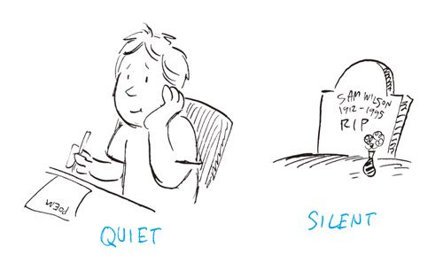

| その英語、ネイティブにはこう聞こえます２ 日常会話＆ビジネス編 | |
| David A.Thayne（ディビッド・セイン） 小池信孝 | |
| (2004) | |
なぜシェフは怒ったのでしょう？
なにげない日常の会話。
でも、ちょっとした言い違いで
こんなすれ違いが起こる
日本に来ている留学生に「君は明日学校に行くの？」と尋ねて、「ぼくは明日学校に行くでしょう」と答えられたら奇異に感じませんか。「～でしょう」は未来形も表すので文法的には問題ないはずなのに、日本語感覚としては不自然です。「行くのか行かないのかはっきりしろ！」と思うかもしれません。
同じことが英語にも言えます。
この本は、ベストセラー『その英語、ネイティブにはこう聞こえます』の続編です。第1弾の海外旅行編に続いて、今回は日常会話＆ビジネス編です。
読者からの「基本の表現を教えて」「もっと状況設定を増やして」というリクエストにおこたえして、ふだんの生活でよく使うBasic Conversationを集めました。恋愛、家庭、会社など、シチュエーション別にまとめてあります。
たとえば恋愛。""""
家庭でよくある会話、「私のバッグどこに置いたかな」。""
会社員のAさん。商談中に相手の言うことが聞き取れず、""
仕事中に私用電話ばかりかけているOLに部長が注意。
「公私混同はいけないよ」と言うつもりで""
このほかにも、文法は間違っていないのに、シチュエーションによってはおかしく聞こえてしまう英語もたくさん紹介しました。
第2章では、日本語では同じ意味に訳されている英単語の違いを解説します。excellentとwonderful、silentとquietは同じ意味だと思っていませんか。実は、これらは決してイコールではないのです。
someとanyは肯定文と否定文の違いだけではありません。
この章ではこれらの使い分け方だけではなく、日本語には訳されていない、学校では習わないニュアンスの違いまでわかりやすく解説しています。
そして第3章では、第1弾で読者から大好評だった日本国内で見つけた珍妙な英語の看板や注意書きなどを紹介するほか、カタカナ英語がネイティブにはどのように聞こえているのかをまとめました。
本書は英語の初級者から上級者まで楽しめる内容になっています。楽しみながら読み進むうちに、英語力がぐんとアップすることでしょう。
この本はもとより、第1弾や、『クイズ！その英語、ネイティブにはこう聞こえます』もあわせて読めば、よりネイティブに近づくことうけあいです。
なお、このシリーズの英語はアメリカ英語であり、ネイティブとはアメリカ英語のネイティブスピーカーのことです。
その英語、
とんだ誤解をまねきます
●自分のことを正しく伝える
●おつきあい上手になる
●恋愛を壊さないために
●お出かけは気分よく
●お店で会話をスムーズに
●家族の会話は円滑に
●ビジネス会話 社内編
●ビジネス会話 社外編
●気持ちや思いを伝える
●質問・返事を感じよく
この単語、
同じ意味じゃなかったの？
●eatVShave（食べる）
eatとhaveは食べ方がこんなに違う
●fixVSrepair（直す）
fixは素人技、repairは職人技
●borrowVSrent（借りる）
商売ならrent、商売でないならborrow
●chooseVSselect（選ぶ）
chooseとselectは選ぶ真剣さが違う
●houseVShome（家）
houseとhomeは「愛情の違い」で使い分け
●manVSmale（womanVSfemale）（男と女）
manは成人男子、maleは性別の男性（♂）を指す
●storeVSshop（お店）
storeとshopはサービス内容と店の大きさが違う
●luggageVSbaggage（手荷物）
luggageはカラでもOK、baggageは中身が必要
●quickVSfast（速い）
quickは時間がかからない、fastはスピードが速い
●interestingVSfunny（面白い）
interestingは「へぇ～」、funnyは「ぷっ！」
●hardVStough（固い・大変だ）
hardな仕事はやりがいあり、toughな仕事はうんざり
●excellentVSwonderful（すばらしい）
wonderful teacherは人気者、excellent teacherは......？
●littleVSsmall（小さい）
small companyをlittle companyと言うと怒られる
●quietVSsilent（静か）
quietは比較的静か、silentは完全な静寂
●bigVSloud（大きい）
big voiceは大きないい声、loud voiceは耳障りな大声
●nakedVSnude（裸）
nakedは警察に通報、nudeならOK?
●a lot ofVSmany（たくさん）
大げさに話すときにはmanyではなくa lot ofで
●listen VS hear（聞く）
英語のhearing能力は、実はlistening能力
●roadVSstreet（道路）
市が町中に通りをつくるなら、roadとstreetどっち？
●(a)littleVS(a)few（少し）
timeにはlittleとfewどちらを使う？
●someVSany（いくつか）
someとanyは期待の大きさが違う
日本で見つけた
ヘンな看板、カタカナ英語
●珍妙な看板
●カタカナ英語
●装丁 犬塚勝一
●カバーイラスト 深川直美
●本文イラスト おのでらえいこ（PART1）／Andy Boerger（PART2）
●校正 東京出版サービスセンター
●編集・制作 主婦の友インフォス情報社
※本書の内容についてのお問い合わせは主婦の友インフォス情報社企画出版部（電話03-3295-9465、本田）までお願いいたします。
【自分のことを正しく伝える】
ケンでいいですよ。
×You can call me Ken.
本当の名前は明かせないが、ケンとでも呼んでください。
いきなり「～と呼んでください」などと言うと、本名を明かせない理由でもあるかのように聞こえて、ちょっと怪しい......。
I'm Kenichi. You can call me Ken.
まずはきちんと名を名乗る。これが礼儀。
I'm Kenichi. Everybody calls me Ken.
「みんなからはケンと呼ばれています」。
【自分のことを正しく伝える】
私は人付き合いが苦手でして。
×I'm not very friendly.
私はすぐにカッとなって暴れだすんです。
これは「かなり凶暴である」ということを、遠回しに言っているだけ。人に噛みつく猛犬について話すとき、まさにこんな言い方をする。
I'm not very outgoing.
これでふつうに「あまり社交的ではない」の意になる。outgoingは「社交的な」「人見知りしない」の意。
I'm a little shy.
内気な性格ならこの言い方で。
I'm uncomfortable around people I don't know.
「私は人見知りするんです」でもOK。
【自分のことを正しく伝える】
英語は少しだけなら話せます。
×I can speak English a little.
バカにしないでくれる。英語ぐらい少しは話せるもん！
a littleを置く位置が問題。これでは、言い方にもよるが「英語ぐらい話せるもん。バカにしないでよ！」と、意固地になって言い張っているように聞こえて大人気ない。
I can speak a little English.
語順を変えてspeak a little Englishとする。
【自分のことを正しく伝える】
私はまだ独身でして。
×I still remain single.
私はいまだに断固として独身をつらぬいています。
remainは「～のままでいる」の意なので、一見OKのようにも見えるが、これは自ら努力してその状態を維持しているときの言い方。
I'm still single.
ふつうに「まだ独身です」と告げるなら、これがなんの含みもなくておすすめ。
【自分のことを正しく伝える】
私は東京育ちです。
×I was grown up in Tokyo.
私が東京にいた頃はもう大人だった。
受身のつもりなのだろうが、ネイティブの耳には、grown upが「成長した」の意の形容詞のように聞こえてしまう。これだと意味が違ってくるのでバツ。
I grew up in Tokyo.
ふつうに過去形でI grew upとする。「私は東京育ちです」。
【自分のことを正しく伝える】
私の家族はみな北海道に住んでいます。
×My families all live in Hokkaido.
一夫多妻ですが、家族は全員北海道に住んでいます。
familyを複数形にしてしまうと、別々の家族を複数有しているように聞こえる。これは、一夫多妻制を適用している一部の社会でしか通用しない言い回し。Is there polygamy in Japan?!（日本ってそうなの？！）なんて驚かれるかも。
Everyone in my family lives in Hokkaido.
everyone in my family～とすれば「私の家族は全員～です」の意になる。
【自分のことを正しく伝える】
父は芸術家として活動していました。
（父が生きている場合）
×My father was an artist.
父は生前、芸術家でした。
その人が死んでいるかのような口ぶり。本人が聞いたらびっくりである。
My father used to be an artist.
used to be～を使う。これで「父はかつて芸術家として活動していました」の意になる。
My father was an artist in his 20s.
このように時期を添えて言う場合はOK。死んだことにはならない。「父は20代の頃は芸術家でした」。
【自分のことを正しく伝える】
アメリカで暮らしていました。
×I lived in the U.S.A.
ボクはあの世界の超大国アメリカで暮らしたのさ！
ネイティブが、話し言葉でいちいちthe U.S.A.などと言うことはまずない。こう言うと、必要以上にその部分が強調されて、妙に誇らしげに聞こえる。これが日本なら「私は日出ずる国、大日本の出身である」とでも言っているようなもの。
I lived in the US.
the US（ユーエスと発音）を使うのがふつう。もちろん、Americaを使ってI lived in America.でもOK。
I used to live in the US.
I once lived in America.
どちらも「昔アメリカに住んでいました」のニュアンス。
【自分のことを正しく伝える】
2年間、南の島でとても幸せに過ごしました。
×I lived on a tropical island happily for only two years.
ラッキーなことに、南の島での生活は2年で終わった。
happilyの位置が問題。これだと「2年で終わってラッキーだった」と、南の島での生活が長くならずにすんだことをよろこんでいるように聞こえる。
I lived happily on a tropical island for only two years.
I lived happily on（in）～で「～（場所）で幸せに過ごした」の意になる。
【自分のことを正しく伝える】
私にはポリシーがあります。
×I have a policy.
保険に入っている。
保険証券のことをan insurance policyと呼ぶが、これはしばしばa policyと略される。そのため、have a policyという言い方をしてしまうと、ネイティブの耳には「保険に入っている」と聞こえる。
I have my principles.
もしくはI make it a policy to～（～するのが私のポリシーです）という言い回しを使って、I make it a policy to never buy cheap suits.（安物のスーツを買わないのが私のポリシーです）などと具体的に伝える。
【自分のことを正しく伝える】
ちょっと痩せました。
×I lost my weight.
私の体は消えてなくなった。
これだと「体重を失う」、つまり、体が消えてなくなった、という意味になってしまう。まさに究極のダイエット......。
I lost some weight.
myではなくsome weightとする。
【自分のことを正しく伝える】
東大に合格したよ。
×I passed Tokyo University.
私は東大の正門の前を通り過ぎました。
日本語では、よく「～大学にパスした」という言い方をするが、これだと「東大の正門の前を通り過ぎた」と言っているだけ......。知らずに使うと、So?（だから？）などと、冷たく切り返される可能性大。
I passed the exam for Tokyo University.
passを使うなら、pass the exam for～（～の試験に合格する）という言い回しをする。
【自分のことを正しく伝える】
昨日、やっとの思いで宿題を終わらせた。
×I tried to finish my homework yesterday.
昨日、宿題を終わらせようと努力はしたけど、無理だった。
I tried to finish～は、結局はそうすることができなかったときの言い回しで、「努力はしたけど、～を終わらせることができなかった」という意味。つまり、努力は無駄になった、ということ。
I managed to finish my homework yesterday.
manageは「やりとげる」「なんとかやってのける」という意味。I managed to finish～とすれば「なんとか～を終わらせた」の意になる。
【自分のことを正しく伝える】
運転免許を取ったんだ。
×I took a driver's license.
運転免許を盗んだ。
問題は動詞のtook（take）。これだと「免許証を盗んだ」というとんでもないニュアンスに。ちなみにDid you take anything?と言われた場合、これもDid you steal anything?（なにか盗んだか？）と言われているのと同じこと。
I got my driver's license.
takeではなくgetを使ってI gotとする。
【自分のことを正しく伝える】
薬局で働いています。
×I'm working at a drugstore.
今のところは薬局で働いているけど、どうなるかなぁ。
ありがちな間違い。I'm working at～.と現在進行形で語ってしまうと、「今のところは～で働いている」「当面は～で働いている」といったニュアンスに聞こえてしまうことがある。まさに腰かけである。
I work at a drugstore.
余計なことはせずにworkでOK。これで「ずっとこの仕事をしてきて、これからもこの仕事を続けるつもり」のニュアンスが出せる。
【自分のことを正しく伝える】
先週、法律の勉強をしました。
×I learned law last week.
先週の1週間だけで法律をマスターしました。
learnは「身につける」「習得する」という意味で使われるのがふつう。I learned English in America.（アメリカで英語をマスターしました）、I learned Spanish at school.（学校に通ってスペイン語を身につけました）などと使う。
I studied law last week.
【自分のことを正しく伝える】
インターネットのことはまったくわからないんです。
×I don't know about the Internet.
インターネットってなに？初めて聞いた。
これだと、インターネットの存在すら知らない、と言っているように聞こえる。いまどき、そんな人はいない。
I don't know anything about the Internet.
I don't know anything about～.とする。これで「～のことについてはまったくわからない」の意に。つまり、存在は知っているけど、それについての知識がまったくない、ということ。
【自分のことを正しく伝える】
ゴキブリ大嫌い。
×I hate a cockroach.
ほかのゴキブリはいいけど、1匹だけ大嫌いなゴキブリがいるんですよ。
aを付けてa cockroachとすると、ある1匹について語っているように聞こえる。これだと、ほかのゴキブリはどうでもいいけど、1匹だけ妙に虫の好かないゴキブリがいる、と言っているみたい。
I hate cockroaches.
複数でcockroachesとする。これで「ゴキブリ全般」の意に。
【自分のことを正しく伝える】
今日、コーンを食べました。
×I ate corns today.
今日、私はウオノメを食べた！
「コーン（とうもろこし）」を意味するcornは数えられない名詞。ただし、このcornには足の裏にできるタコ「ウオノメ」の意もあり、こちらは複数でも使える。つまり、複数でI ate corns.とすると「ウオノメを食べた」の意になる。ちょっとグロテスク......。
I ate some corn today.
「コーン（とうもろこし）」のcornは数えられない名詞なので、some cornとする。
【自分のことを正しく伝える】
お昼にチキンを食べた。
×I had a chicken for lunch.
お昼にチキンをまるごと1羽食べちゃった！
ネイティブがa chickenと聞くと、a complete chicken（チキン全体）のことと理解する。You must have been really hungry.（そうとうお腹空いてたのね）なんて驚かれそう。
I had chicken for lunch.
aは不要。これでふつうに「お昼にチキンを食べた」の意になる。
【自分のことを正しく伝える】
このバッグは自分でイタリアから取り寄せました。
×I imported this bag from Italy personally.
このバッグはこのわたくし自らがじきじきにイタリアから取り寄せたものなり。
このpersonallyはかなり大げさ。これだと、それを自慢げに話しているように聞こえる。日本語で言うなら「じきじきに」って感じ。
I ordered this bag from Italy.
これだけで十分。
【自分のことを正しく伝える】
長い髪をとかして、歯を磨きました。
×I brushed my long hair and teeth.
長い髪と、長い歯を磨きました。
この言い方だと、long（長い）という形容詞がhairとteethの両方にかかってしまう。つまり、「長い髪と長い歯」の意。長い歯って、いったいどんな歯なのか。
I brushed my long hair and then brushed my teeth.
After I brushed my long hair, I brushed my teeth.
どちらでもOK。このように「髪をとかす」と「歯を磨く」を、はっきりと分けて伝えれば誤解されずにすむ。
【自分のことを正しく伝える】
ジャケットをリフォームしました。
×I reformed my jacket.
上着が悪いことをしないように再教育しました。
洋服などを「リフォームする」というときには、このreformという単語は使わない。これは「改心させる」「矯正する」「改革する」といった意味で用いるのがふつうで、Prison didn't reform him.（刑務所に入れられても彼は改心しなかった）、I'm going to reform the system.（システムを改正します）といった具合に使うのがふつう。
I had my jacket altered.
alterは「（寸法や形を）部分的に変える」という意味。「衣類のリフォーム」なら、この動詞がぴったり。
I took my jacket to the tailor's.
「ジャケットを仕立て屋さんに持っていった」。
【自分のことを正しく伝える】
飼っていた猫が死んじゃったの。
×My cat was dead.
私の猫は一度死んだけど、今はピンピンしてるわ。
deadは形容詞。これを～was deadと過去形で語ってしまうと、死んでいたのが過去のことのように聞こえてしまう。つまり、一度死んで生き返った、ということ。It's a miracle!（まあ、奇跡ね！）なんて感動されそう。
My cat died.
die（死ぬ）の過去形diedを使って言い表せば正解。これで「私の猫が死んじゃったの」の意に。
【自分のことを正しく伝える】
大型犬を飼っています。大好きなゴールデン・リトリーバー。
×I'm having a big dog. It's my favorite, a Golden Retriever.
今、大きな犬を食べているところなんですよ。私の好物のゴールデン・リトリーバー。
進行形で語ると、こんなけったいな意味に！これでは犬を飼っているのではなく、「今まさに犬を食べている」という意になってしまう（もしくは「犬を産んでいる」）。これを聞いた相手は、Ah... will you excuse me? I just remembered an appointment.（あのぅ、おいとましてもいいですか？急に約束を思い出したので......）なんて、慌てて帰ってしまうかも。
I have a dog. It's my favorite, a Golden Retriever.
進行形ではなく、シンプルにhaveにする。これであなたの人格は疑われずにすむ。
My dog is a Golden Retriever.
「ゴールデン・リトリーバーを飼ってます」。
【自分のことを正しく伝える】
これは高校生のときに読んだ本だ。
×This is the book I read in high school.
高校のときにはこの本1冊だけしか読まなかった。
the bookとしてしまうと、それが唯一の本、というニュアンスになってしまう。3年間で読んだ本が1冊だけ......。まんざら珍しい話でもなかったりして。
This is a book I read in high school.
theではなくaが正解。これでほかにもたくさん読んだ中の1冊、という意味になる。
【おつきあい上手になる】
どうぞ。
（ものを手渡して）
×Here.
ほらよ。
友だちや家族が相手なら問題ないが、見知らぬ人に向かって使うには、ちょっとなれなれしい。
Here you are.
やさしく「はいどうぞ」「はいこれです」と人にものを手渡すときの定番表現。Here you go.でもOK。
【おつきあい上手になる】
楽にしてください。
（客を部屋に迎え入れて）
×Take it easy.
そうカッカするな！
take it easyにも、たしかに「楽にする」「リラックスする」といった意味があるが、使い時が別。文章の中でI'm going to take it easy this weekend.（今週末はのんびりするよ）といった具合に使うなら問題ないが、Take it easy.と単独で使うと、カッカしている相手を落ち着かせたいときに使う言い回しになる。もしくは「バイバイ」の意。
Make yourself at home.
make oneself at homeで「くつろぐ」「楽にする」の意になる。かしこまっているお客さんに声をかけるときの定番フレーズ。
【おつきあい上手になる】
靴は脱いでください。
×Would you kindly take off your shoes?
靴くらい脱いでよね。常識でしょ。
Would you kindly～?と言われたら、嫌味だと思ってほぼ間違いない。「～くらいはしてくれてもいいでしょ」という感じ。
Would you mind taking off your shoes?
Would you mind～?を使う。「～してもらってもいいですか」。
【おつきあい上手になる】
お住まいはどちらですか。
×Where do you live?
住所は？
ストレートすぎて、なんだか警察の尋問みたい......。
You live...?
このように言葉を濁すと、ちょっと遠慮して聞いている感じがだせる。「ええと、お住まいは？」というニュアンス。
Do you live around here?
「このあたりに住んでるの？」と遠まわしに尋ねるのも手。
【おつきあい上手になる】
あだ名はありますか。
×What's your nickname?
あなたのあだ名はなに？早く教えて。
あだ名なんて、ない人のほうが多いことを考えると、これがおかしな英語だということがわかる。なんだか「あだ名を早く言え」と強要されているみたい。こんな聞き方をしたら、I'm sorry, I don't have a nickname.（すみません。あだ名はないんです）なんて謝られそう。
What do you like to be called?
相手になんと呼ばれたいか尋ねるならこれ。「なんと呼べばいいですか」。
Do you have a nickname?
ストレートにあだ名があるかどうかを知りたいときにはこの尋ね方で。「あだ名はありますか」。
【おつきあい上手になる】
血液型は？
×What's your blood type?
あなたのプライベートな情報を教えてください。
ネイティブは血液型をとてもプライベートな情報と見なしている。したがって、この質問は、まさに「彼氏いるの？」「ボディサイズは？」などと聞かれているのと同じこと。It's none of your business!（あなたに教える必要はありません！）なんてムッとされる可能性大。実際、アメリカでこんな質問をしてくるのは医者くらいのもの。
I can tell your personality by your blood type. What's your blood type?
どうしても日本式の血液型性格判断をネイティブに試したいのなら、このように、「血液型からあなたの性格がわかります」などと前置きをしておくことをおすすめする。
【おつきあい上手になる】
ヒラガナは読めますか。
×Can you readhiragana?
ヒラガナ読める？読めないんだろう？
皮肉のニュアンスたっぷり。ヒラガナが読めない相手を小バカにしているように聞こえて非常に感じ悪い。
Do you readhiragana?
Can you～? ではなくDo you～? で尋ねる。これで嫌味な含みはなくなる。たったこれだけの違いなのに、ニュアンスは大違い。
【おつきあい上手になる】
日本の総理大臣が誰だか知ってる？
×Do you know the prime minister of Japan?
日本の総理大臣とはお知り合いなの？
これだと、その人と個人的な知り合いかどうかを尋ねることになってしまう。間違って使えば、Why would I know him?（知り合いなわけないだろ）などと冷たく返される可能性大。
Do you know who the prime minister of Japan is?
Do you know who～is? と尋ねる。これで「～を知ってる？」「～って誰だか知ってる？」の意に。
【おつきあい上手になる】
またね！
×See you again.
またいつの日かお会いしようではありませんか。
See you again.は、次にいつ会えるかわからない相手に、再会を祈りながらかける別れの言葉。I hope to see you again.を短くした形と思って間違いない。友だち同士で交わす日常の別れのあいさつでは、こうは言わない。
See you.
See you around.
See you later.
Later.
Take care.
どれも「またね」「じゃあね」のニュアンス。またすぐに会える相手ならこちらの言い方で。
【おつきあい上手になる】
犬と猫どっちが好きですか。
×Which do you like better, dog or cat?
犬の肉と猫の肉、どっちが好き？
dogを単数形にすると、こんな恐ろしい意味になってしまうので要注意。食用の肉は不可算名詞として扱うため、単数で話すとネイティブが連想するのは食用の肉。dogに限らずcat、birdなども同じこと。
Which do you like better, dogs or cats?
このような場合には必ずdogsと複数形にする。これで「犬と猫どちらが好きですか」の意になり、へたな誤解を生むことはない。
【おつきあい上手になる】
この犬の種類は英語ではなんと言うの？
×How do you call this dog in English?
この犬を呼ぶときは、どうやって呼ぶの？
Here, boy.（おいで）とかCome here.（来い）など、犬を呼び寄せるときの呼び方を尋ねているように聞こえる。
What do you call this dog in English?
HowではなくWhatで尋ねる。これで「この犬は英語でなんと言いますか」の意に。
What breed of dog is this?
「この犬の犬種は？」でもOK。breedは「種類」、breed of dogで「犬種」。
【おつきあい上手になる】
あなたの犬はこれと同じ犬種？
×Is your dog this kind?
あなたの犬ってこんなに親切なの？
このthisは「これほどに」「こんなにも」の意。必然的に、続くkindが形容詞（「やさしい」の意）として受け取られるのが自然の流れ。親切な犬って、いったいどんな犬なのか。この構文、本来はIs your dog this small?（あなたの犬ってそんなに小さいの？）、Is your dog this smart?（あなたの犬ってこんなにも利口なの？）といった具合に使う。
Is this the same kind of dog as yours?
「これはあなたが飼っているのと同じ種類の犬ですか」が直訳。このような尋ね方をすれば誤解されることはない。次のような言い方をしても同じ。
Is this the kind of dog you have?
Is this dog the same breed as yours?
breedは「犬種」の意。
【おつきあい上手になる】
私たちは言葉を交わしました。
×We exchanged words.
私たちは喧嘩しました。
正しい意味を知らずに、勘違いしてこう言ってしまっている人が意外と多い。exchange wordsは「口論する」の意。「あいさつする」という意味にはならない。
We exchanged greetings.
「あいさつを交わす」はexchange greetings。
【おつきあい上手になる】
あなたって頭いいですね。
×You are a wise guy.
生意気なやつめ。
wiseは「賢い」「頭のよさそうな」といった意味だが、wise guyとしてしまうとポジティブな意味合いではなくなる。これは決まり文句で「知ったかぶりする人」「大口をたたくやつ」といった意味。
You are a wise man.
wise manとすれば正解。これで「頭のいい人」の意に。You're so smart.でもOK。「本当に頭いいですね～」。ちなみにsmartは「利口な」「頭がきれる」の意。「（体型が）スマートな」の意では使わない。
【おつきあい上手になる】
幽霊っていると思う？
×Do you believe ghosts?
おばけの言うことを信じる？
Do you believe～?は「～の言うことを信じますか」の意。おばけの言うことって、いったい......。
Do you believe in ghosts?
前置詞のinをお忘れなく。believe in～で「～の存在を信じる」の意になる。Do you believe in God?（あなたは神を信じますか）。
【おつきあい上手になる】
彼が亡くなったことは新聞で知りました。
×I learned he died from newspaper.
彼は新聞を食べて死んだのだと聞きました。
I learned he died from～.の～には、cancer（がん）やAIDS（エイズ）などといった死因か、その情報の出どころが来るのがふつうで、出どころが新聞だった場合には必ず冠詞が付いてthe newspaperとなる。このtheがない場合には、ネイティブにはそれが死因のように聞こえてしまう。die from～は「～がもとで命をおとす」という意味。
I learned he died from the newspaper.
冠詞のtheを付けてthe newspaperとする。
【おつきあい上手になる】
ボクの車どう？
×How do you like my car?
オレの車すげーだろ！
これでは、感想を求めているというより、「すごいだろ」と自慢しているみたい。こんなはなもちならない言い方をされると、ついついYeah, yeah.（はいはい）などと、冷たくあしらいたくなる。
What do you think of my car?
これでふつうに「ボクの車どう？」と尋ねる言い方になる。
【おつきあい上手になる】
今度お電話してもいいですか。
×Can I call you sometime?
今度電話するからデートしようよ。
この言い回しからは、相手への恋心が見て取れる。誰かに真剣な眼差しでこう言われたとしたら、それはデートの誘いだと思って間違いない。
Can I give you a call?
こう尋ねれば、いらぬ誤解を招かずにすむ。なんの含みもなく、「電話していい？」くらいの軽いニュアンス。
【おつきあい上手になる】
君に勝ったぞ。
（ゲームに勝って）
×I won you.
ボクは君を勝ち取っちゃった！
win youとしてしまうと、ネイティブの耳には、youが賞品とか獲物かなにかのように聞こえてしまう。彼女の奪い合いでもしていたのか。winの後にはモノがくるのがふつう。I won a new car.（新車が当たった）。
I won.
ゲームなどで「ボクの勝ち！」「勝った！」などと言うなら、シンプルにこれでOK。
【おつきあい上手になる】
ゲームを終わりにしましょう。
×Let's finish the game.
ゲームを最後までやっちゃいましょう。
これだと「とにかく最後までやりましょう」の意に。ゲームを中断するつもりなど到底ない、という感じ。
Let's end the game.
同じ「終える」でも、endは「途中だけどやめる」「ここまでで終わりにする」という意味合いで用いるのがふつう。
【おつきあい上手になる】
ひとりにしてもらえますか。
×Would you leave me alone?
邪魔しないでよ！
これでは、つっけんどんに「邪魔しないでよ」「あっちへ行って！」と、相手を追い払っているようにも聞こえる。
Would you leave me alone for just a moment?
後ろにfor just a momentを付けるだけで、つっけんどんなニュアンスはなくなる。これでふつうに「少しの間ひとりにしてください」とお願いする言い方に。
【おつきあい上手になる】
彼に盛大な拍手を！
×Please give him the clap!
彼に性病をうつしちゃいましょう！
clapは動詞で「手で音をたてる」の意。本来はClap your hands.（手を鳴らして）という具合に使う。名詞として使った場合は、スラングで「性病」の意に！
Please give him a hand!
give someone a handで「～に拍手する」の意に。とてもよく使う決まり文句なので、このまま覚えよう。
【おつきあい上手になる】
電話をかけたいのでちょっと待ってください。
×Please give me the time to make a telephone call.
電話は何時にするのか教えてください。
意味不明。Please give me the time.は「時間を教えてください」という意味の定番表現。つまり、これでは「電話をかける時間を教えてください」と言っているようなものである。
Please give me a little time to make a telephone call.
theではなくa littleを使う。
【おつきあい上手になる】
彼は自分を芸術家と呼んでいる。
×He calls himself an artist.
あいつは「自称」アーチストの勘違い野郎だ。
callを使うと、そう思っているのは自分だけ、ということになってしまう。つまり、実際は全然違うということ。He calls himself～.で、「彼は自称～だ」「自分を～と思っている、とんだ勘違い野郎だ」といったニュアンス。
He says he's an artist.
callではなくsayを使う。シンプルにこれでOK。
【おつきあい上手になる】
彼はいくつか問題を抱えている。
×He has problems.
あいつの人生、もう終わってる。
He has problems.という文には、それがどの程度の問題なのかがわかるような語がなにもない。したがって、これだけ聞くと、人生が問題だらけでもうボロボロ、救いようがない、と言っているように聞こえる。似たような例を挙げると、He has money.とだけ言うと「彼はものすごい大金持ちだ」だが、He has lots of money.だと、「彼は金持ちだ」のニュアンスになり、逆に金持ち度合いは低くなる。英語って不思議。
He has several problems.
程度を示すseveralが付くと、ニュアンスがぐっとやわらぐ。数えられる程度の問題なら、まだ救いようがある。
【おつきあい上手になる】
東京の家は秋田よりも高い。
×House prices in Tokyo are higher than Akita.
東京の家は、秋田県を買うときの値段よりも高い。
東京で家を買えるだけの金があれば、秋田県を自分のものにできる、と言っているようなもの。いったい秋田県の値段っていくらなのか......。いくら物価の高い東京でも、そんな豪邸あるはずがない。
House prices in Tokyo are higher than (they are) in Akita.
前置詞のinを付けてin Akitaとする。これで完璧。
【おつきあい上手になる】
今年はインフルエンザが流行っているね。
×The flu is popular this year.
みんなインフルエンザのことが大好きさ！
このpopularは「人気がある」「好評である」という意味の「流行る」。したがって、これだと「インフルエンザが大人気」という、ありえない文になってしまう。ちなみに、fluはinfluenza（インフルエンザ）のこと。ただの風邪はcold。
A lot of people have the flu this year.
「今年は多くの人がインフルエンザにかかっている」が直訳。このように説明的に伝えるほうが自然な言い回しになる。
【恋愛を壊さないために】
なにを考えていたの？
×What were you thinking?
お前はいったいなにを考えてるんだ！
これでは「バカなことを言うんじゃない！」「頭おかしいんじゃないの」などと言っているのと同じこと。これは人の愚かな行為を叱るときによく使うフレーズ。
What were you thinking about?
「どんなことを考えていたのですか」と尋ねたいなら、文末のaboutをお忘れなく。
【恋愛を壊さないために】
電話もらえると思ってた。
×You were supposed to call me.
なんで電話してくれなかったのよ！
これだと、電話してこなかったことに腹を立てて、ヒステリックになっているみたいに聞こえる。「電話してくれるって言ったじゃない！」「なんで電話してくれなかったのよ！」といったニュアンス。be supposed to～は「本当は～していなくてはいけない」の意。
I thought you were going to call me.
I thought you were going to～.（～してくれるはずだと思ってた）という言い回しを使えば、嫌味っぽいニュアンスはなくなる。
Did you say you were going to call me?
「電話するって言ってたっけ？」と軽い感じで尋ねるニュアンス。
【恋愛を壊さないために】
彼女とは仲よくやっています。
×I get along with her.
もう嫌気がさしてるけど、彼女とはなんとか続いてるよ。
get along with～は辞書で引くと「仲よくしている」となっているが、実際には「ケンカはしていない程度の仲のよさ」「離婚はしない程度の仲」を指している。こんなふうに友人に話しているのを恋人に聞かれたら、ケンカは避けられない。
I get along great with her.
I get along wonderful with her.
本当に仲がいいのなら、このようにgreatやwonderfulなどの形容詞を添えるのがふつう。
【恋愛を壊さないために】
残念、私は行けないんです。
（誘いを断って）
×I'm not going.
行ってなるものか！
実はこの表現、ネイティブの耳にはI'm not going and you can't make me.を短くしたものに聞こえている。つまり、「なんと言われようと行かない」「行きたくない、なにを言っても無理よ」といったニュアンス。
I'm afraid I can't go.
I can't go.
I won't be able to go.
I'm not going to be able to go.
どれも「（残念だけど）行けないんです」という、残念そうなニュアンスが出せてマル。
【恋愛を壊さないために】
ダンスが上手だね。
×I like your dancing.
君の踊りって、なんか好きだなぁ～。
なんだかスケベっぽい。まるでショーガールとかストリッパーに言い寄っているみたい。下心がみえみえという感じ。
You're a great dancer.
ダンスの上手さをほめるなら、さわやかな印象のこのフレーズがおすすめ。
【恋愛を壊さないために】
これといってないわ。
（「なに食べたい？」と聞かれて）
×I have nothing in my mind.
頭の中はからっぽです。
これでは「私バカなんです」と言っているようなもの。そんなこといきなり宣言されても......。
I have nothing in mind.
myは不要。これで「これといってありません」「とくに決めていません」といったニュアンスになる。たとえば、What would you like to eat tonight?（今晩はなに食べたい？）などと聞かれたときに、とくに希望がないのならこう答える。
【恋愛を壊さないために】
彼女と過ごして楽しかった。
×I enjoyed myself with her.
彼女とセックスして楽しんだ。
たしかに、I enjoyed myself.だけなら「とても楽しかったです」の意になるが、with herがつくとニュアンスが一変。これだと「彼女と好きなようにして楽しんだ」、つまり「彼女とセックスして楽しんだ」の意になる。After I enjoyed myself with her, I paid her $50.（彼女とたっぷり楽しんだあと、50ドルを支払った）。
I had a good time with her.
have a good time with～で「～と楽しく過ごす」の意に。主語をWeにするとこうなる。
We had a good time together.
【恋愛を壊さないために】
彼に電話しなくちゃ。
×I should call him.
彼に電話しなくちゃならないけど、しないだろうな......。
shouldは義務を語るときの言葉として有名だが、実はこれ、実際には「～しなければならないのはわかっているけど、でもしないだろうなぁ」といった意味合いで使うのがふつう。つまり、かなり消極的になっているときの言い回しなのである。これにreallyをつけると、それを実行に移す可能性はさらに低くなる。I really should call him.（彼に電話しなきゃならないのは本当にわかってるけど、でもどうしても無理だろう）。
I need to call him.
need toを使うとより自然な言い回しになる。「～しなくちゃ」。
Maybe I should call him.
maybeを文頭につけると、shouldの消極的なニュアンスはなくなる。「彼に電話したほうがいいよね」という感じ。
【恋愛を壊さないために】
ジョンはリンダをトニーが愛する以上に愛している。
×John loves Linda more than Tony.
ジョンはトニーのこと以上に、リンダのことを深く愛している。
つまり、どちらも愛しているということ......。複雑な人間関係だ。
John loves Linda more than Tony does.
最後のdoesを忘れずに。これで誤解は避けられる。
【恋愛を壊さないために】
彼女のペットの名前はなんですか。
×What is your girlfriend's pet name?
いちゃいちゃするとき、彼女のことなんて呼んでいるの？
pet nameはスラングで、「恋人同士（または夫婦同士）で行うお互いの呼び方」のこと。たとえば、honey（ハニー）、darling（ダーリン）、babe（ベイブ）などがそれ。こんな質問をされたら、It's too embarrassing.（恥ずかしくて言えないよ～）などと照れちゃうかも。
What is your girlfriend's pet's name?
「ペットの名前」と言うならpet's nameとする。
【恋愛を壊さないために】
彼は彼女に夢中なのよ。
×He is mad at her.
彼は彼女のことで腹を立てている。
前置詞ひとつで意味がガラリと変わってしまう代表例。mad at～で「～に対して怒る」の意。
He is mad about her.
「～に夢中」と言うなら前置詞はaboutが正解。mad about～（人）で「～が大好き」の意になる。
【恋愛を壊さないために】
お医者さんと結婚しました。
×I got married with a doctor.
お医者さんと一緒に結婚した。
I married～とすればすむことなのに、あえてwithをつけて伝えると、自分たちの横で、別のカップルも同時に式を挙げたかのように聞こえてしまう。合同結婚でもしたのか。
I married a doctor.
シンプルにI married～.でOK。これで「～と結婚した」の意に。I married a lawyer.（弁護士と結婚したの）、I married a musician.（ミュージシャンと結婚したわ）。
【恋愛を壊さないために】
結婚生活をエンジョイしているわ。彼はすべてを共有できる相手なの。
×We have a good marriage. We share each other.
結婚生活をエンジョイしているわ。フリーセックスなのよ！
shareはWe shared a piece of cake.（2人でひとつのケーキを分け合った）といった具合に使うのがふつう。これをWe share each other.としてしまうと、「他の人とパートナーを分け合う」と言っているのと同じことになる。
We have a good marriage. We share everything with each other.
share everything with each otherで「（喜びも悲しみも）すべてを共有する」の意。これぞ理想の結婚生活。
【恋愛を壊さないために】
危険な性行為は避けること。
×Avoid having an unsafe sex.
危ない性別は持たないこと？？？
sexを数えられる名詞としてとらえた場合は「性別」の意。したがって、これだと「危ない性別」というおかしな意味になってしまう。それっていったいどんな性別なのか......。sexを複数で用いるのは、The two sexes are different in many ways.（2つの性別はいろいろな点で違いが見られる）などと言う場合。
Avoid having unsafe sex.
性行為の「セックス」の場合、数えられない名詞なのでanは不要。これで「危険な性行為」の意。
Make sure you practice safe sex.
「セーフセックスを心がけましょう」。
【恋愛を壊さないために】
ボクの彼女はパーマをかけている。
×My girlfriend has permanent hair.
彼女は永久的に抜けない髪をしている。
permanentは「永久的な」「一生ものの」の意。つまり、これだと一生抜け落ちることがない毛、という意味になってしまう。植毛でもしたのだろうか。
My girlfriend has a perm.
have a permで「パーマをかけている」の意。シンプルにこれでOK。
【恋愛を壊さないために】
彼は穏かな性格よ。
×He's soft.
あいつはバカ。
よく知っている単語だからといって安易に使ってしまわないように。これでは、He's soft in the head.と言っているのと同じこと。「頭の中がふわふわ」、つまり「バカだ」ということ。
He's gentle.
gentleは「やさしい」「穏かな」「親切な」といった意味。ちなみに女性の場合にもgentleと言う。
He's kind.
おなじみのkindでもOK。
He's easy to get along with.
easy to get along withは「気さくな性格をしている」の意。
【恋愛を壊さないために】
酔っちゃったみたい。
×I seem drunk.
酔っぱらったみたいに見えるよね、私。
I seem～（形容詞）. は「私は～のように見える」という意味の表現。たとえば、I seem confused.で「私って混乱しているように見えるよね（混乱なんてしてないけど）」といった意味になる。本来はI seem perfect to you, but I'm not.（ボクって君の目には完璧な人間に見えるかもしれないけど、本当はそんなことないんだよ）といった具合に使うのがふつう。
I seem to be drunk.
I seem to be ～.で「～してしまったみたいです」の意になる。
I think I'm drunk.
こちらも自然。「なんだか酔っちゃったみたい」。
【お出かけは気分よく】
この辺りにおすすめの美容院はありますか。
×Are there any good beauty salons around here?
ないように見えるけど、この辺りにまともな美容院なんてあるの？
anyをつけてAre there any～? とすると、「～なんてひとつでもあるか」と、あるはずがないと決めてかかっているように聞こえる。
Is there a good beauty salon nearby?
anyを付けずに単数形で尋ねれば、嫌味な含みはなくなる。nearbyは「近くに」「近所に」の意。
【お出かけは気分よく】
いい飲み屋を教えてください。
×Tell me about a good bar.
いい飲み屋にまつわる話をしてください。
Tell me about～.は「～についての話を聞かせてください」の意。これだと意味がまったく違ってきてしまう。いい飲み屋にまつわる話っていったい......。
Do you know any good bars nearby?
Do you know any～nearby?で「近くに～はありますか」「このあたりで～をなにか知っていますか」の意になる。
【お出かけは気分よく】
ここで車から降りよう。
×Let's get off the car here.
ここで車の上から飛び降りよう。
「車に乗る」ならget in the carでOKだが、「降りる」をget offとしてしまわないように。こう言うと、車の屋根の上から降りたように聞こえてしまう。get off the train（電車から降りる）ならOK。
Let's get out of the car here.
「車から降りる」はget out of the car。このまま覚えよう。
【お出かけは気分よく】
犬のウンチを踏んじゃった。
×I stepped in some dog shit.
犬のクソを踏んじまったぜ！
shitは、すばり「クソ」「大便」。とても下品な感じがするので、こんな言い方は絶対に避ける。
I stepped in some dog poop.
「犬のウンチ」はdog poopと呼ぶのがふつう。響きもなんとなくかわいらしい。
【お出かけは気分よく】
道に迷ってしまった。
×We're lost.
道に迷っちゃったよ～。どうしたらいいのかなぁ。
道に迷ってしまい、オロオロしながら「迷っちゃったよ～」と泣きごとを言う感じ。いい年をした大人が使うと、ちょっと恥ずかしいかも......。良識ある大人なら、こんな幼稚な言い方はしないはず。
I think we're lost.
We seem to be lost.
「道に迷ってしまったようなのですが」。このような場合は、断言せずに多少言葉をにごしたほうが、より自然な言い回しになる。
【お出かけは気分よく】
彼はボクの親しい友人です。
（外で知人に会って）
×He is my dearest friend.
彼ね、ボクと仲よしのお友だちなの。
dearest friendは主に女性が使う言葉で、「仲よしのお友だち」のニュアンス。書き言葉なら問題ないが、男性がこのようなしゃべり方をすると、ちょっとヘンに聞こえる恐れがある。
He's my good friend.
He's my buddy.
He's my bud.
3つとも「彼はいい友だちだ」の意。budはbuddyを短くした形、どちらもよく使う。
He's a good friend from high school.
「彼は高校のときからの親しい友人です」。
【お出かけは気分よく】
彼女はじきに来てくれるさ。
（友だちが待ち合わせに遅れて）
×She'll probably show up.
彼女、残念だけど、来ちゃうと思うよ～。
probablyは、どちらかというと「そうなってほしくないけど、たぶん～だ」「嫌だけど、もしかしたら～しちゃうかもよ」といったネガティブな内容の文で使うことが多い。
She'll show up.
probablyは不要。She'll～.で「彼女はきっと～するよ」「彼女はじきに～するよ」のニュアンス。She'll come.（彼女は来るよ）でもOK。
【お出かけは気分よく】
一緒にお昼を食べた。
×We had a lunch.
お食事会へ行きました。
a lunchとしてしまうと、なにか特別な行事の際に出される食事のことを言っているみたい。たとえば、法事のあと、親戚が集まってとる食事もa lunchと呼ばれている。これはa special lunchの略。breakfastやdinnerの場合も同じこと。
We had lunch.
aは不要。
【お出かけは気分よく】
劇場にオペラを観に行ったよ。
×I went to the opera house to see an opera.
オペラを観ようとしてオペラ劇場へ行ったけど、観ませんでした。
I went to the opera.ですむところを、あえてこのような長たらしい言い回しをすると、ネイティブには「オペラを観にオペラハウスへ行ったけど、観れなかった」と言っているように聞こえてしまう。たとえば、オペラじゃなくて、たまたまバレエをやっていたとか......。
I went to the opera.
シンプルにこれでじゅうぶん。I went to the opera house and saw an opera.（オペラ劇場へ行って、オペラを観ました）と伝えるのも手。
【お出かけは気分よく】
美術館でゴッホの絵を見ました。
×I saw Gogh drawing at the museum.
美術館でゴッホが絵を描いているところを見た！
これだと「美術館でゴッホが絵を描いているところを目撃した」というおかしな文に。おばけでも見たのか......。
I saw Gogh's drawing at the museum.
Gogh's drawingとすれば、drawingが名詞に限定され「ゴッホの絵」の意になる。このdrawingは名詞で「絵」の意。
【お出かけは気分よく】
イチゴを摘みとった。
×We picked up strawberries.
落ちていたイチゴを拾いました。
pick upは「拾い上げる」という意味。これだと、床に落ちているイチゴを拾い上げたかのように聞こえてしまう。
We picked strawberries.
pickだけで「摘みとる」の意になるので、前置詞のupは不要。
【お出かけは気分よく】
今夜は映画を観に行こう。
×Let's watch a movie tonight.
今夜は家のテレビで映画でも観よう。
watchを使って言い表した場合、ネイティブの耳には、この後にon TV（テレビで）が省略されているように聞こえている。
Let's go see a movie tonight.
go see a movieで「映画館へ映画を観に行く」の意。決まり文句なので、このまま覚えよう。
【お出かけは気分よく】
満月を見上げた。
×I looked up the full moon.
満月のことを調べた。
辞典かなにかで月のことを調べているみたい。look up～は「～を辞書で調べる」「～（言葉）を調べる」の意。
I looked up at the full moon.
「～のほうに顔を上げる」はlook up atが正解。このatが重要なのでお忘れなく。
【お出かけは気分よく】
もう行かなくちゃ......。
×I have to go now.
もう行くからな！
ちょっとぶっきらぼうな感じで、これではあまり残念そうには聞こえない。もうすこし違った言い回しで伝えたいところ。
I really have to go now.
reallyを付けるだけで印象は一変。こう伝えれば、より残念そうに語る感じが出せる。「残念なのですが、本当にもう行かなければならないんです」といったニュアンス。
【お出かけは気分よく】
車のエンジンがかかりません。
（車の修理屋さんで）
×My car won't move at all.
車そのものがまったく動かない!!
エンジンがどうこうというよりも、「車がまったく壊れている」というおおざっぱなニュアンス。修理工さんの困った顔が目に浮かぶ。また、渋滞にはまってこう言えば、「（渋滞で）ちっとも動かない」の意にも。
My car won't start.
エンジンがかからないなら、英語では「車がスタートしない」と伝えるのがふつう。
【お出かけは気分よく】
おかげさまで楽しかったです。
（遅くまでひきとめられたパーティから帰るときに）
×Thanks to you.
あ～あ、おかげでこんなに遅くなっちゃったよ。
本来は「おかげさまで」という意味の感謝のひとこと。ただし、I'm sorry for keeping you so late.（遅くまでひきとめてしまってすみませんでした）などと謝られたあとでこう言うと、完全に嫌味のひとことになってしまうので要注意。これでは「遅くなったのはあなたのせいだ」と言っているようなもの。
Thank you for inviting me.
この場合は、まず「お招きありがとうございました」と言うのが無難。きちんと礼儀をわきまえている感じ。
そのあと次のようにひとこと添えるとベター。
We had a great time.
We had a wonderful time.
「とても楽しかったです」。

【お店で会話をスムーズに】
待ち時間はどれくらいですか。
×How long must I wait?
どれだけ待たせるのよ、いったい！
mustが問題。これだと、待ち時間の長さに腹を立てているように聞こえる。こんな大人気ない言い方は避けるべき。
How long do I need to wait?
ふつうに待ち時間の長さを尋ねるときにはneedを使う。こう言えばなんの含みもない。How long do you think it'll take?（どれくらいかかりそうですか）も感じのよい聞き方。
なんの匂い？
（料理の匂いに）
×What's that smell?
うっ！なにこの嫌な臭い！
これは嫌な臭いをかいだときに、思わず放つひとこと。鼻をつまみながら「なにこの臭い？くっさ～！」というイメージ。
What's that delicious smell?
delicious smellで「おいしそうな匂い」の意に。「おいしそうな匂いね、なんの匂い？」「このいい匂い、なに？」といったニュアンス。Something smells good.（いい匂いがするね）、Smells great. What are you making?（いい匂い！なにつくってるの？）も自然。
【お店で会話をスムーズに】
この肉やわらかいね。
×This steak is soft.
この肉、ふにゃふにゃしていて気持ち悪い。
石鹸の泡とかソフトクリーム、あの類のふわふわした感じを指すのが、このsoft。ソフトなステーキって、いったいどんなものなのか......、想像するのも難しい。
This steak is tender.
tenderが正解。「やわらかい」「たやすく切れる」の意。
【お店で会話をスムーズに】
このチキン固いね。
×This chicken is hard.
このチキン、カッチカチに固まってる。
hardと聞くと、ネイティブはカチンコチンの固い物質をイメージする。そこまで固いチキンにはなかなかお目にかかれない。冷凍肉なら別だが。
This chicken is tough.
「肉などが固い」「歯ごたえがある」と言うときにはtoughを使って。これでふつうに「このチキンは固い」の意になる。
【お店で会話をスムーズに】
その新しいパン、あまりおいしくないよ。
（開店したてのパン屋さんで友だちに）
×New bread doesn't taste very good.
一般に新しいパンというのはまずいものだ。
「一般に～だ」と、あたかも一般論を述べているみたい。では、古いパンならうまいのか......。
The new bread doesn't taste very good.
冠詞のtheをつけて「そのパン」と限定する。これでOK。
【お店で会話をスムーズに】
グッチのバッグはどこにありますか。
×Where's Gucci's bag?
グッチさんが持っているバッグはどこいった？
Where's ...'s bag? は「～さんのバッグはどこですか」の意。これだと、グッチさんという人物が所有するバッグの場所をたずねることになってしまう。Who's that?（誰それ？）なんてギョッとされちゃう可能性あり。
Where are the Gucci bags?
Where are～? として複数で尋ねる。Where are the Chanel shoes?（シャネルの靴はどこですか）、Where are the Hermes scarves?（エルメスのスカーフはどこですか）といった具合に、買い物で大活躍する表現なので覚えよう。
Do you have any Gucci bags?
Do you have any～?（～はなにかありますか）もよく使う。
I'm looking for a Gucci bag.
単数で尋ねるならこの言い方。「グッチのバッグがほしいのですが」。
【お店で会話をスムーズに】
高すぎて買えないわ。
×It's too expensive.
ふっかけようったってそうはいかないよ！
自分のふところ具合とは関係なく、その商品の値段設定自体が高いことになってしまう。We're not that kind of store.（うちはそういった類の店ではありません！）なんてムッとされるかも。
It's too expensive for me.
このfor me（私にとっては）が重要なのでお忘れなく。I can't afford it.でもよい。affordは「～を買う余裕がある」の意。It's a little over my budget.（ちょっと予算オーバーかな）でもOK。
【お店で会話をスムーズに】
エレベーターはどこですか。
×Where's elevator?
エレベーターさんどこ行っちゃったの？
Where'sの後に冠詞を伴わない名詞が来る場合、それは固有名詞に限られる。したがって、この言い方だとエレベーターという人の居場所を尋ねているように聞こえてしまう恐れあり。
Where's the elevator?
冠詞のtheを。これでふつうに「エレベーターはどこですか」になる。
【お店で会話をスムーズに】
試着室の場所を教えてください。
×Please show me the fitting room.
試着室をよーく見せてください。
試着室が大好きでじっくり見ていたいのか、事件の捜査中の探偵なのか......。ここでは動詞のshowが問題。本来はPlease show me your home.（家の中を案内して）などと使うのがふつう。
Please show me the way to the fitting room.
もしくは、Where is the fitting room?（試着室どこ？）だけでもOK。
【お店で会話をスムーズに】
エアコンが故障しています。
×This air conditioner isn't working.
このエアコン、ぶっ壊れてるんだけど。ったく。
文頭のthisが問題。「このエアコン、壊れてるじゃないの」「このエアコン、壊れてるんだけど、どうなってんの？」と、一方的に相手を責めているように聞こえて、ちょっと怖い。
The air conditioner isn't working.
ThisではなくTheが正解。これで怒っているようには聞こえない。It seems like the air conditioner isn't working.（エアコンが故障しているようなのですが）とすると、より柔軟な言い回しに。
【お店で会話をスムーズに】
水曜日まで滞在します。
×I stay until Wednesday.
水曜日まで泊まる習慣があります。
このように現在形で伝えてしまうと、それが習慣になっているかのように聞こえてしまう。
I'll be staying until Wednesday.
未来形でI'll be staying～.とする。これでふつうに予定を述べる言い回しになる。ただし、willを短縮せずにI will be～.としてしまうと「私は絶対に～するつもりだ」と、決意を表明する言葉になってしまうので注意。
【お店で会話をスムーズに】
タクシーを呼んでください。
×Would you please call me a taxi?
どうか、お願いですからタクシーを呼んでくださいませんか。
Would you please～? などと言うと、「どうかお願いですから～」と懇願しているように聞こえてかなり不自然。タクシーを呼んでもらう程度のことで、こんな大げさな言い方はしない。
Would you call me a taxi?
Could you call a taxi for me?
pleaseは不要。また、a taxiのaを付け忘れると「私をタクシーと呼んで」の意になってしまうので注意。
【お店で会話をスムーズに】
なににしますか。
（飲み物の希望を尋ねる）
×What do you want?
いったいなにが狙いなの？
「いったいなにが狙いなの？」「なにが望みなのよ？」と追及するニュアンス。たとえば、子どもを誘拐された母親が犯人に、What do you want?（いったいなにが望みなの？）といった具合。
What would you like?
wouldを使って、このように尋ねるのが一般的。より具体的に尋ねるならWhat would you like to drink?（飲み物はなににしますか）とする。
Can I get you anything?
こう尋ねるのもネイティブらしくてマル。「なにかお持ちしましょうか」。
【お店で会話をスムーズに】
中をご案内しましょう。
×I could show you around.
そんなに見たいなら案内してやってもいいよ。
I could～.は「～ならば～することはできる」という意で使う仮定法。つまり、ネイティブには「本当はやりたくないけど、仕方ないからやりますよ」と言われているように聞こえてしまう。こんなつっけんどんな言い方をしてしまったら、相手にNever mind. We'll look around by ourselves.（嫌なら結構。自分たちで見て歩くから）なんてムッとされちゃうかも。
I can show you around.
この場合はcanが正解。
Would you like me to show you around?
こっちもOK。「ご案内いたしましょうか」。
【お店で会話をスムーズに】
ご自由にお持ちください。
×This is service.
これが「奉仕」です。
「これが奉仕です」と言われても......。serviceは「奉仕」の意。ネイティブが「無料」の意で使うことはない。たとえば、How was the service at that restaurant?（あのレストランの接客はどうだった？）といった具合に使う。
This is free.
「無料」はfree。
This is on the house.
「店からのサービスです」のニュアンス。
You can have this.
これでも「どうぞお持ちください」のニュアンスになる。
【お店で会話をスムーズに】
トイレまでご案内します。
×I'll take you to the bathroom.
トイレまで私が付き添って行きますから大丈夫ですよ。
I will take you to～としてしまうと、「私が付き添って～までお連れします」というニュアンスになる。まさに介護士が使いそうなひとこと。若い人に向かってこう言えば、Don't treat me like an old lady!（老人扱いしないでよ！）なんて言われちゃうかも......。
I'll show you where the bathroom is.
takeではなくshowを使う。showは「見せる」のほかに「案内する」という意味でもよく使われるので覚えておこう。
【お店で会話をスムーズに】
当店は5時まで営業しています。
×We are in business until 5:00.
この店は今日の5時につぶれます。
be in businessは「商売をしている」「事業を行っている」の意。ここにuntil 5:00（5時まで）という期限がついてしまうと、その後は事業活動を中止することになってしまう。つまりout of business（倒産する）ということ。
We are open until 5:00.
簡単にopenでOK。シンプルが一番！
Our business hours are from 9:00 to 5:00.
こちらもよく使う定番フレーズ。「営業時間は9時から5時までです」。
【お店で会話をスムーズに】
プリンターを10％値引きします。
×We can discount 10% of the printers.
当店のプリンターは、台数の1割を値引きして販売しています。
10% of the printersとすると「1割の台数のプリンター」になってしまって意味が違ってくる。つまり早い者勝ちで値引きが受けられる、ということ。
We can give you a 10% discount on the printers.
give someone a 10% discount on the printersとする。これで「プリンターを10％値引きする」の意に。
【家族の会話は円滑に】
仕事に行く時間よ。
×It's time you go to work.
もう大人なんだから、さっさと仕事を始めなさい！
It's time you～. は、ネイティブの耳にはIt's high time you～.（あなたはもうとっくに～してもいい頃だ）と言っているように聞こえている。It's time you start taking responsibility.（もう大人なんだから、自分の行動に責任を持ちなさい）、It's time you move out.（もう大人だし、ひとり暮らしを始めてもいい頃よ）というように使う。
It's time to go to work.
これで「仕事に行く時間ですよ」と、ふつうに告げるひとことに。
【家族の会話は円滑に】
赤ちゃんを見ていてくれる？
（ベビーシットを頼んで）
×Please take care of my baby.
私の赤ちゃんのことを引き受けてもらえますか。
take care ofは、たしかに「～の面倒をみる」という意味だが、これはその期間が長くなるときに使うのがふつう。たとえば、Please take care of my baby while I'm in jail.（刑務所で務めを終えて出てくるまで赤ちゃんのことをお願いします）といった具合。とつぜんこんな言い方をされたら、子どもを捨てていくつもりじゃないかと怪しまれてしまう。
Please watch my baby.
watchを使う。これで「赤ちゃんをちょっとお願いね」「赤ちゃんを見てて」といったニュアンスになる。
Could you babysit for me tonight?
より具体的に「今夜、うちの子の面倒をお願いできる？」と尋ねるならこれ。
【家族の会話は円滑に】
どこかに行くの？
×Where are you going?
どこに行く気なのよ！
「どこに行く気よ！」「逃げる気？」と、怪しんでいるような口ぶり。たとえば、夜中に携帯電話を片手に忍び足で寝室を出ていこうとする夫に向かって妻が、Where are you going?（どこに行く気よ？）といった具合。
(Are you) Going somewhere?
これで「どこかに行くの？」「お出かけですか」といった軽いニュアンスになる。街角でばったり友人に会ったときなど、あいさつの言葉としても使える、フレンドリーな問いかけ。
【家族の会話は円滑に】
それはちょっと違うんじゃないかな。
（「これでいいの？」などと聞かれて）
×That's wrong.
だめだめ、ぜんぜん違う！
Is this it?（これでいいの？）などと聞かれて、このような答え方をしてしまうと、ストレートすぎてちょっと怖い。なんだか厳しい家庭教師の先生に「だめだめ！まったくだめ！」などと叱られているみたい。
That might be wrong.
might be～を使うと、やさしい感じの物言いになる。「それは間違えてるんじゃないかな」。
That isn't quite right.
「ちょっと違うかな」。
No, I don't think so.
「いや～、それは違うと思うぞ」のニュアンス。
【家族の会話は円滑に】
バッグはどこかな？
（自分が持ってきたバッグを探して）
×Where's my bag?
私のバッグをいったいどこに置いたのよ！
ネイティブならこうは言わない。これだと「バッグをどこに置いたの？」「勝手に片づけたでしょ」と、相手を叱りつけているように聞こえてしまう可能性あり。
Where did my bag go?
Where did ～ go?で、「～はどこかな？」「～をどこに置いたかな？」といった意味になる。例えば、Where did my purse go?（お財布はどこかな？）、Where did my coat go?（コートはどこに置いたかな？）といった具合。Where did I put my bag?（バッグはどこに置いたかな？）でもOK 。
【家族の会話は円滑に】
なにか飲み物ない？
×Is there anything to drink?
どうせ飲み物なんてないよね？
「なにもなさそうだけど......」と尋ねる前から決めてかかっているような口ぶり。Is there anything at all to drink?（なさそうだけど、飲み物ってあるの？）という感じ。
Is there something to drink? Anything would be fine.
anythingではなくsomethingを使う。これでふつうに「飲み物はなにかありますか」の意に。
【家族の会話は円滑に】
私のサングラス知らない？
×Have you seen my sunglass?
私の太陽のガラス板知らない？
意味不明......。
Have you seen my sunglasses?
sunglassesと複数形にするのを忘れずに。英語では、複数、単数がけっこう重要になってくるので気をつけたい。
【家族の会話は円滑に】
部屋に花を飾ったの。
×I decorated the flowers in the room.
部屋の花に飾り付けをしたの。
decorateから後ろの語順が問題。これだとflowers（花）にdecorate（飾り付け）をしたかのように聞こえてしまう。新進気鋭の華道家が挑戦しそうなあらわざである。
I decorated the room with flowers.
部屋を飾ったのだから、decorateの後ろにはthe roomがくる。
【家族の会話は円滑に】
窓から頭を出しちゃだめよ。
×Don't put your head out of the window.
頭を窓の外に持っていっちゃだめよ。
out of the windowという部分が問題。ネイティブがこう聞くと、なにかを手に持って窓から外に出す光景をイメージしてしまう。それがyour head（頭）だと、かなり怖い......。
Don't put your head out the window.
ofは不要。put ...out ～で「...を～から出す」。
【家族の会話は円滑に】
もう少しやせなきゃ。
（お父さんを心配して）
×You need to shape up.
しっかりしなきゃだめじゃないの！
「シェイプアップ」は立派なカタカナ語。英語の本来の意味は「行動を改める」「きちんと振舞う」。
You need to get in shape.
これで完璧。「もっと痩せないとダメですよ」「ダイエットしないと体に悪いですよ」といった警告の意味も含まれる。
【家族の会話は円滑に】
ちょっとよけてくれる。
×You're in my way.
どけよ、そこ！
myが問題。この部分が強調されて「この私が通るのだから、そこをどきなさい」という傲慢なニュアンスに。
You're in the way.
myをtheにするだけで、ニュアンスが少し和らぐ。ただし、こちらも見知らぬ人に向かって使うには不適切。もっと丁寧に道を空けてもらうなら、Excuse me, can I get through?やI'm sorry, I need to pass.（ちょっと通してもらっていいですか）がベター。
【家族の会話は円滑に】
今夜はテレビでも観よう。
×Let's watch the TV tonight.
今夜はテレビの装置を見て楽しもう。
the TVは、テレビの本体そのもの。かなりマニアックな趣味である。ちなみに、TVは「ティーヴィー」と発音。
Let's watch TV tonight.
冠詞のtheは不要。
【家族の会話は円滑に】
メニューはなに？
×What's the menu?
メニューとやらは、いったいどういうものなの？
これでは「メニュー」という言葉の意味を尋ねることになる。The menu is what you order from.（メニューっていうのは注文できる料理のリストよ）なんて親切に教えてくれる人がいたりして。
What's for dinner?
What's for～?を使うとより自然な聞き方になる。このまま覚えよう。What's for dinner?で、「夕食はなにかな？」「今夜のメニューはなに？」といったニュアンス。What's for lunch?（お昼はなに？）、What's for breakfast?（朝食はなに？）といった応用も。
【家族の会話は円滑に】
お母さんはパーティの準備をしている。
×My mom is getting ready for the party.
お母さんはパーティへ出かける用意をしている。
get ready for～とすると、自分のための準備をしているような印象になる。つまり、これは人のパーティにお呼ばれしているときの言い方。
My mom is preparing for the party.
be prepare forを使うと、料理やら飾り付けやらをしながら準備をしているニュアンスが出せる。
【家族の会話は円滑に】
手伝えないんだ。
（頼みごとをされて）
×I won't help.
絶対に手伝わねえよ！
won'tはwill notの短縮形。I won't～とすると「私は絶対に～しない」とかたくなになにかを拒むひとことに。お誘いを断るときにこう言えば、「手伝うもんか！」「なにが何でも手伝わないぞ！」といったケンカごしのニュアンスになってしまうので要注意。
I won't be able to help.
be able toをつける。これで「残念なんだけど......」というニュアンスが加わる。
I'm afraid I can't help.
I'm afraid～は「すみませんが......」「残念ですが......」の意。
【家族の会話は円滑に】
仕事が見つかるといいね。
×I hope you'll find a job.
早くあなたが定職に就いてくれないと困るじゃない。
I hope you'll～としてしまうと、仕事が見つかるかどうか、というよりも、その人の意思の問題を話しているように聞こえる。いつまでもフリーターでいる息子に母親が「そろそろまじめな仕事に就いてよ」と言っているみたい。
I hope you find a job.
will（'ll）は不要。
Good luck finding a job.
とても心がこもっている感じがして好印象。「仕事が見つかることを祈ってるよ」。
【家族の会話は円滑に】
妻は声がうるさくてね。
×My wife has a big voice.
妻はほれぼれするような大きな声をしている。
形容詞のbigが問題。こう言うと、あまり文句を言っているようには聞こえない。むしろ、大きくてよく通る声質のよさをほめているみたい。似たような意味を持つ形容詞はたくさんあるが、微妙にニュアンスが異なることがあるので要注意。
My wife is loud.
bigではなくloudを使えばネガティブな意味合いがしっかり伝わる。loudは「やかましい」「そうぞうしい」といったニュアンスを伝えるのにぴったりの単語。
【家族の会話は円滑に】
今日お母さんとケンカしちゃったの。
×I fought against my mom today.
お母さんと命をかけた戦いを続けたわ！
fight againstは、あくまでも「真剣な戦い」を意味する。また、その後ろに「人」がくることはめったになく、fight against cancer（癌と闘う）、fight against crime（犯罪撲滅のために闘う）などと使うのがふつう。間違って使うと、Is your mom okay?（お母さんは大丈夫なの？）なんて、真剣に心配されちゃうかも。
I fought with my mom today.
fight with～で「～とケンカする」の意に。ただし、「～とともに闘う」の意にもなるので、状況に応じて。
【ビジネス会話社内編】
コーヒーを入れるからお湯を沸かして。
×Could you boil some hot water for coffee?
コーヒーを入れるから沸かしてあるお湯をもう一度沸かして。
すでに沸いているなら沸かす必要なし。よほどお熱いのがお好きらしい。
Could you boil some water for coffee?
お湯は水から沸かすもの。よってwaterが正解。
【ビジネス会話社内編】
公私混同しないように。
×Please leave your privates home.
「体の恥ずかしい部分」は家に置いてきてくれ。
your privatesなどとレディの前でうっかり口走らないように気をつけて。実はこれ、the private parts of your body（体の個人的な部分）を短く言っているだけ。つまり「性器」のこと。これではただのセクハラである。
Please leave your private life at home.
private lifeとする。これで完璧。personal lifeでもOK。
【ビジネス会話社内編】
時間通りに来るように。
×You had better be on time.
時間通りに来ないと首だぞ、おまえ。
You had better～は、相手にプレッシャーをかける言い方で、「～しないと大変なことになるぞ」のニュアンス。これでは脅しだ。
You need to be on time.
need toを使うと自然な言い回しに。これで押し付けがましいニュアンスはなくなる。
【ビジネス会話社内編】
原則的に、わが社は9時出社です。
×In principle, you need to be here at 9:00.
一応9時に出社することになってますけど、べつに気にしなくていいですよ。
in principleは、あくまでも「建前上は」の意。これでは「9時に来る必要はない」と言っているようなもの。その言葉を鵜呑みにして、毎日遅刻してくる人がいたりして。
You need to be here at 9:00.
In principleは不要。お互いに常識ある大人なのだから、余計な前置きはせずに「仕事は9時からです」と伝えるだけで十分。
【ビジネス会話社内編】
職歴を教えてください。
（面接で志願者に質問する）
×Please tell me about your work experiences.
職場での面白い経験を話してください。
work experiencesと複数形で話すと「職場で起こった面白い経験」のニュアンスになってしまう。職歴を聞きたいだけなのに面白い経験を長々と話されても......。
Please tell me about your work experience.
work experienceで「職歴」の意。かならず単数形で。
【ビジネス会話社内編】
彼は指示によく従ってくれる。
×He is obedient.
彼は犬のように従順だ。
obedientは「従順な」の意なので、一見問題ないようにも見えるが、従順さの度合いが問題。これは、犬のように従順な相手を形容する言葉なので、ほめているというよりは、バカにしている感じ。
He follows orders well.
このように伝えれば、ネガティブな含みはなくなる。ただし、あまり仕事ができるという感じはしないのであしからず......。なんでも進んでやってくれる優秀な人をたたえるなら、He is self-motivated.（彼はとてもやる気がある）。
【ビジネス会話社内編】
彼が上司になった。
×He became a boss.
彼は暴力団の親分になった。
bossはたしかに「上司」という意味があるが、became a bossというと、ネイティブが思い浮かべるのは、暴力団のボスだけ。
He became my boss.
my bossとする。これで「彼が私の上司になった」の意に。
【ビジネス会話社内編】
彼は私の上にいます。
（彼は私の上司）
×He is over me.
彼、私のことはふっきれたみたい。
be over someoneは「～との辛い経験を乗り越える」「～への思いをふっきる」といった意味。たとえば、We broke up a year ago, so I'm over her now.（ボクたちは1年前に別れたから、もう彼女のことはふっきれたよ）といった具合に使う。
He is my boss.
one's bossで「～の上司」の意。シンプルにこれでOK。
I work under him.
He's above me in the company.
どちらも「私は彼の下で働いている」のニュアンス。
【ビジネス会話社内編】
大きなミスを犯してしまった。
×I made a remarkable mistake.
目をみはるほどのすばらしいミスをしたよ！
remarkableは「目をみはるような」「卓越した」といった意味。これでは、ミスしたことを自慢しているみたい。
I made a serious mistake.
この場合、「深刻な」「重大な」を意味するseriousがぴったりくる。
I made a terrible mistake.
terribleは「ひどい」「大変な」の意。
【ビジネス会話社内編】
これから一所懸命がんばります！
（プロジェクトへの抱負を聞かれて）
×We will work hard from now on.
今までは適当に仕事してたけど、これからはちゃんとやるよ。
from now onは「これまでとは違って、これからは～」のニュアンス。つまり、今までは不真面目に仕事していた、ということ。こんな部下だけは持ちたくない。
We'll work hard.
シンプルにこれでOK。「これから一所懸命がんばります」。
We'll do our best on this project.
こちらも一所懸命さがよく伝わる。「ベストをつくします」。
【ビジネス会話社内編】
ドルが安くなってきているね。
×Dollars have been falling.
ドル札が空から落ちてきているよ。
無冠詞でdollarsと複数にすると、こんな変な意味に。I gotta go!（こうしちゃいられない！）なんて外に飛び出す人がいたりして。
The dollar has been falling.
冠詞をつけてthe dollarとする。
The dollar has been in decline.
The dollar has dropped.
The dollar has weakened.
どれも「ドル安だ」の意。
【ビジネス会話社内編】
わが社は経営難に陥ってしまいました。
×My company went into financial difficulty.
わが社はやっとのことで経営難に入りました！
まったく苦にしていないという感じで、悲愴感は伝わってこない。むしろ、そうなったことを誇らしげに語っているみたい。問題はwent（go）の部分。go intoとしてしまうと、自ら望んでそうしたかのような響きになるので要注意。
My company fell into financial difficulty.
My company got into financial difficulty.
fall intoもしくはget intoという表現を使う。これで「～に陥る」というネガティブな印象の文になる。
【ビジネス会話社内編】
ご発言をありがとうございました。
（会議で）
×Thank you for your speech.
長々としゃべってくれてありがとうさん。
speechは「演説」の意。意見や提案を述べた人に向かって「演説をありがとう」などと言うのは、まさに嫌味以外のなにものでもない。長々とした発言を聞かされたあと、「長々とありがとう」とチクリ、という感じ。
Thank you for your comment.
commentを使う。これで「コメントをありがとう」「ご意見を感謝します」といったニュアンスになる。
【ビジネス会話社内編】
今日はこの問題の対処にあたってください。
×Please cope with this problem today.
今日はなにもしないでこの問題に耐えていてください。
たしかにcope withを辞書で引くと「～に対処する」と出てくる。実はここに落とし穴が......。実はこのcope with、「我慢する」「耐える」といった意味合いで使われるのがふつう。たとえば、I can't cope with it.（もう我慢できない！）、I can't cope with this noise.（この騒音には我慢できない）といった具合。
Please deal with this problem today.
「対処する」「処置にあたる」なら、迷わずdeal withを。
【ビジネス会話社内編】
一杯やりませんか。
×Do you want to drink?
酔っぱらいたくないか。
drinkは「大酒を飲んで酔っぱらう」という意味で使われるのがふつう。つまりget drunk（酔っぱらう）と意味合いは同じ。Do you want to get drunk?（酔っぱらいたい？）などと使う。
Do you want to get a drink?
get a drinkという言い回しを使うと、より自然なひとことに。
How about a drink?
こちらも自然。「一杯どう？」と、気軽に誘う感じ。
Do you want to join me for a drink?
「いっしょに一杯どうですか」。
【ビジネス会話社外編】
お待たせしました。
（電話で待たせた相手に）
×I am sorry. I have kept you waiting.
こんなにもお待たせしてしまいまして、お詫びの言葉もございません。
I'mではなくあえてI am sorry.とすると、より心のこもった謝罪のひとことになる。さらにI have kept you waiting.も「こんなにもお待たせしてしまって大変恐縮です」のニュアンス。低姿勢でけっこうなのだが、なにごとにも限度がある。くどい。
Sorry for keeping you waiting.
「お待たせして申し訳ありません」すっきりとこれでOK。
【ビジネス会話社外編】
ご伝言を承ります。
（電話で不在を伝えて）
×May I take your message?
あなた、伝言あるんでしょう？
伝言がなければ電話してはいけないような口ぶりだ。こんなふうに言われたら相手は思わずI'm sorry, but I don't have a message.（すみません、伝言はありません）なんて謝っちゃうかも。
May I take a message?
yourでなくaが正解。
【ビジネス会話社外編】
お電話が遠いのですが。
×I can't listen to you.
それ以上言うな！
同じ「聞く」でも、listen toは「耳を傾ける」というニュアンスの「聞く」。よって、I can't listen to you.と言うと「あなたの話には耳を傾けられない」転じて「黙って聞いていられない！」「聞くわけにはいかない」のニュアンスになる。本来は、I can't listen to this nonsense.（こんなバカげた話は聞いていられない）などと使う。
I can't hear you.
listenではなくhearを使う。こう伝えるのが自然。
【ビジネス会話社外編】
申し上げたことをおわかりいただけたでしょうか。
×Do I make myself clear?
わかったか?!
これは怒っているときに使う表現。「わかったか」「いいな、わかったな！」と凄みのある声でたしなめる感じで使うのがふつう。
Did I make myself clear?
これでふつうに「私が言ったことがわかりましたか」と尋ねるひとことになる。たったの1単語でここまでニュアンスが変わるので注意。Did you understand me?でもOK。
【ビジネス会話社外編】
なんとおっしゃったのかわからないのですが。
×I can't understand you.
あなたって人が理解できない。
これでは相手の人格を疑っているみたい。「あなたという人間がわからない」「あなたのすることは理解できない」といったニュアンス。いきなりこんな言われ方をしたら、かなりヘコむ。
I couldn't understand you.
couldn'tと過去形にするだけでニュアンスは一変。これで「なんと言ったのかわかりませんでした」「なんと言ったのですか」と、ふつうに聞き返すひとことになる。
I couldn't understand.
I didn't understand that.
こちらもニュアンスは同じ。どちらもおすすめ。
【ビジネス会話社外編】
もう少しゆっくり話してください。
×Speak more slowly, please.
あんた、しゃべるの速いんだよ。
pleaseが付いていれば丁寧かというとそうでもない。このpleaseも、実際、嫌味にしか聞こえない。「しゃべるの速いんだけど！」「もっとゆっくり話してよ！まったくも～」といったニュアンス。自分のリスニング力不足を棚に上げた、なんとも身勝手な言い分である。
Could I ask you to speak a little slower, please?
Could I ask you to～, please?は「～してくださいますか」「～していただいてもいいですか」といったニュアンスの、とても慎ましい言い回し。Could you speak a little slower for me?と言ってもニュアンスは同じ。
【ビジネス会話社外編】
もう一度言ってくださいませんか。
×Once more, please.
そこのところをもう一度言ってごらん。
「はい、そこをもう一度言ってください」「もう一度言ってみて」といったところ。逆に相手に英語を教えてあげているような口ぶりである。立場が逆になってしまうので、こんなエラそうな言い方は避けるべき。
Could you say that again?
Beg your pardon?
どちらも丁寧で感じのよい聞き方でおすすめ。
【ビジネス会話社外編】
田中は本日お休みをいただいております。
（田中は部長）
×Tanaka Manager is absent today.
田中まねーじゃー氏は本日お休みをいただいております。
ネイティブにはTanaka Managerがフルネームのように聞こえてしまうことも......。
Mr. Tanaka is absent today.
部長、課長などといったタイトルをいちいち言う必要なし。
【ビジネス会話社外編】
担当者に折り返し電話させます。
×I'll make the person in charge call you back.
担当者は嫌がってますが、必ず電話させますから。
このような状況でmake ＋（人）＋（動詞）という言い回しをすると「...（人）に無理やり～させる」のニュアンスになる。こんな言い方をしたら、Don't bother.（もうけっこう！）なんて電話を切られちゃうかも。
I'll have the person in charge call you back.
have someone call you backで「...（人）に折り返し電話させる」の意。このまま覚えよう。
【ビジネス会話社外編】
Eメールは確かにお送りしました。
×I certainly did send the e-mail.
メールは間違いなく送りましたよ。失敬な！
I certainly did～.は「ウソではない、確かに～した」というニュアンス。メールが先方に届かなかったことをとがめられて、「間違いなく送りましたよ。失敬だな！」と憮然として言い張っている感じ。
I'm sure that I sent the e-mail.
「確かに～しました」と伝えるならI'm sure that～. とすればOK。
【ビジネス会話社外編】
ファックスをお送りしてもよろしいですか。
×Can I send fax?
ファックスさんを送ってもいい？
これだとファックスという名の人物を送りこむと言っているように聞こえてしまう恐れあり。電送人間か。
Could I send a fax?
aを忘れずに。この1語で大違い。
【ビジネス会話社外編】
それを私に送っていただきたいのですが。
×I want you to send it to me.
私にきちんと送んなさい。いいわね！
I want you to～.としてしまうと、「～しなさい。わかったわね」と強い口調で命令しているように聞こえてしまい、まったくお願いしているようには聞こえない。
I'd like you to send it to me.
I'd like you to～.という言い回しをすれば、よりやわらかい印象のひとことに。
【ビジネス会話社外編】
あとどれくらいかかりますか。
×How long will it take you?
いったいどれだけかかんのよ。
youをつけると「あなたの場合は」というニュアンスが加わり、嫌味っぽくなる。まるで文句を言っているみたい。
How long will it take?
youは不要。これで「（ふつうは）どれくらいかかりますか」の意になる。aboutをつけてAbout how long will it take?とすると、よりやわらかい印象に。「だいたいでいいのですが、どれくらいかかりますか」。
【ビジネス会話社外編】
ちょっと時間がかかります。
×It takes little time.
すぐにできますよ。
take little timeは「ほとんど時間がかからない」「すぐにできる」というニュアンス。I have little time.だと「もう時間がほとんどない」。
It takes a little time.
aを付けてtake a little timeとすると、「ちょっと時間がかかる」というニュアンスになる。つまり、けっこう時間がかかる、ということ。
【ビジネス会話社外編】
そうしてくださいますか。
×Please do it.
おやりなさい！
pleaseを付ければ丁寧になると思ったら大間違い。場合によっては、さらに凄みが増すこともある。
Could you?
Would you?
どちらも「それでは、そうしてもらえますか」「いいんですか。ではお願いします」といったニュアンス。
【ビジネス会話社外編】
申し上げにくいのですが。
×It's hard to say.
知らないよ。
It's hard to～. は「～するのが難しい」という意味の言い回しなので、一見OKのようにも思えるが、It's hard to say.と言った場合には使い時が変わってくるので気をつけたい。これは「さあ知りません」「わかりません」という意味で、「言いにくい」というニュアンスにはならない。つまり、I don't know.と言っているのと同じこと。
It's difficult to say.
hardではなくdifficultを使う。答えづらいことを尋ねられ、「言いにくいのですが」などと言葉を濁すならこれがぴったり。
【ビジネス会話社外編】
どうぞおかけになってください。
×Please sit down.
とっとと座れ、立ち上がるな！
ネイティブならこうは言わない。これだと、「そこ！立ちあがらないように」などと、立ち上がったことを注意されているみたいに聞こえる。ネイティブに向かってこう言えば、Oh, excuse me.（おっと失礼）なんて謝られちゃうかも。
Please have a seat.
Have a seat, if you'd like.
どちらもイスをすすめるときの定番フレーズ。「どうぞおかけください」「お座りになってください」といったニュアンス。
Please make yourself comfortable.
この言い方もよく使う。「楽にしてください」。
【ビジネス会話社外編】
珍しいお名前ですね。
（名刺をもらって）
×You have a strange name.
へんちくりんな名前してるね。
strangeは日本人になじみのある単語なので、ついつい使ってしまいがちだが、これはネガティブな意味合いで使われることが多いので注意。
You have an unusual name.
unusual nameで「珍しい名前」「あまり聞いたことがない名前」の意になる。こう伝えれば、相手も侮辱ととることはない。
【ビジネス会話社外編】
ご一緒に食事でもいかがでしょうか。
×Would you like to go out to dinner with me?
ねぇ、食事に誘ったら来てくれるぅー？
ネイティブにとってgo outはgo out on a dateと言っているのと同じこと。したがって、go out to dinnerとしてしまうと、単なる食事ではなくなってしまう。「デートしよう」と誘っているようなもの。
Would you like to go to dinner with me?
go toとすれば、デートという感じはしなくなる。go to dinnerで「食事に行く」の意。
【ビジネス会話社外編】
日本は税金が高いのですな。
×The tax of Japan is quite high.
日本を買うための税金は高いぞ。
これだと日本を買うときにかかる税金のことになってしまう。そりゃあ高いだろう......。
The taxes in Japan are quite high.
複数でtaxesとして、前置詞をinに。これで「日本では税金がとても高い」の意になる。
【ビジネス会話社外編】
私たち、自分の会社を持ってます。
×We have company.
お客さまがいらしています。
無冠詞でhave companyとすると、「来客がある」の意になり、まったく意味が違ってしまう。突然こんなことを言われたら、わけがわからない。
We have a company.
「会社を持っている」と言いたい場合には、aを付けてhave a companyとする。own（所有する）を使い、We own a company.としても意味は同じ。
【ビジネス会話社外編】
弊社は1985年に設立しました。
×Our company had been established in 1985.
弊社は1985年に設立しましたが、その後、倒産しました。
過去完了形で話してしまうと、まさしく過去に完了したことになってしまう。つまり、現在は営業していない、ということ。
Our company was established in 1985.
ふつうに過去形でOK。「弊社は1985年に設立された」。
【ビジネス会話社外編】
16人の従業員がいます。
×My employees are sixteen.
私の従業員はみな16歳です。
この伝え方だと、年齢の話に聞こえてしまう恐れあり。So young?（そんなに若いの？）なんて驚かれたりして。なんの会社だ......。
I have sixteen employees.
I have ～（数）employees.で「～人の従業員がいる」の意に。
【ビジネス会話社外編】
転職しました。
×I changed my job.
業務内容を変えました。
これだと「仕事内容を変えた」と言っているようで不自然。いきなりこう言われても、どういうことなのか理解に苦しむ。
I changed jobs.
「転職しました」「仕事を変えました」といったニュアンス。前の仕事と、新しい仕事、対象となる仕事は2つなので、複数のjobsにする。これで完璧。
がんばれ！
（声援をおくって）
×Fight! Fight!
ケンカしろ！やれやれー！
日本語では、人に声援をおくるときに「ファイト！」と言うが、これをそのまま英語にしてしまうと、ちょっとまずい。これでは「やれやれー！」「倒せ！」などと、ケンカをあおっているようにしか聞こえない。ボクシングやプロレスの試合ならこれもありだが、テニスやバレーボールの会場でこう叫んだら、かなりひんしゅく。
Go! Go!
Come on!やGo for it!もよく使う。どれも「がんばれ！」「行け！」「行け！もうちょっとだ！」といったニュアンス。アメリカのスポーツ中継を見ていると、よく観客席から聞こえてくる。
【気持ちや思いを伝える】
かわいそうに......。
（友人をなぐさめて）
×Too bad.
しょうがないでしょ。
あっさりしすぎていて、心が全然こもっていないように聞こえる。それどころか、「自業自得よ」と突き放す感じもある。これでは友人はますます落ち込んでしまう。
I'm sorry to hear that.
とても心がこもっている感じがしてマル。
That's too bad.
「かわいそうに」「残念だったね」のニュアンス。That'sをつけるだけで、冷たい印象はなくなる。
【気持ちや思いを伝える】
悲しいです。
×I feel sad.
なんだか悲しいような気がするしぃ～。
feelは「～のような気がする」。これでは、とても悲しんでいるようには聞こえない。
I'm so sad.
シンプルにこれでOK。
I'm so disappointed.
「もうがっかり」。
Oh, no.
こんな言い方もネイティブっぽい。「なんてこと！」「あぁ、悲しい」といったニュアンス。
【気持ちや思いを伝える】
もう怒った！
×I am angry.
私は怒っているのでございます。
妙に冷静で不自然な感あり。ネイティブなら、カッとなっているときに、こんな言い方はしない。
Damn it!
Shoot!
「こんちくしょう！」「くそ！」といったニュアンス。頭に血が上って思わず放つひとこと。
How could you do that!
You're so stupid!もOK。「なんてことを！」「バカなんだから！」の意。
【気持ちや思いを伝える】
満足してます。
×I'm satisfied.
まあ、これでもいいか......。
「ぎりぎり満足している」「これといって不満はない」といったニュアンスで、可もなく不可もなく、といったところ。とてもじゃないがよろこんでいるようには聞こえない。
I'm really happy with it.
より具体的にI'm really happy with the results.（結果には十分満足している）などと言うこともできる。
【気持ちや思いを伝える】
彼、感動してるよ。
×He is touched.
あいつはいかれてる。
実はこれ、ネイティブの耳には、He is touched in the head.と言っているように聞こえている。これは「頭がへん」「いかれている」という意味。ただし、このような意味になるのは、主語がIではないときに限るので注意。I'm touched. なら、ふつうに「感動しました」の意に。
He was touched by ～.
過去形のwasにして、さらに、なにに感動したのかも言い添える。たとえば、He was touched by the movie.（彼は映画に感動した）、She was touched by the story.（彼女はその話に感動した）といった具合。
【気持ちや思いを伝える】
おもしろいジョークだね。
×That was an interesting joke.
それはとても興味津々のジョークですなぁ。
意外に多いのがこの間違い。interestingは「興味深い面白さ」を意味する語なので、ジョークやコントなどといった腹を抱えて笑う類の面白さには使わない。ジョークの分析でもするつもりなのか。
That was a funny joke.
この場合は、迷わずfunnyで。
【気持ちや思いを伝える】
それでは不公平です。
×It's not fair.
ずるい！ずるい！
子ども言葉。「ずるいぞ！」「ひいきだ！」といったニュアンス。大人気ないので、こんな言い方は避ける。自分だけたっぷり宿題を出された児童が「そんなのずるいや！」と、ブーブー言っているみたい。
It doesn't seem fair.
seem（～と思われる）を使って少し言葉を濁すと、大人らしい落ちついた言い回しになる。
【気持ちや思いを伝える】
すてき！
（新居の感想を求められて）
×It's nice.
ま、こんなもんでしょ。
あまりほめているようには聞こえない。Do you like my new house?「私の新居どう？」と聞かれてこう言ったら、冷たい感じで「こんなもんでしょ」「まあいいんじゃない」といったところ。言われたほうはがっかりしてしまう。
It really is nice.
It's really nice.
reallyを付けるだけで、ぐっと心がこもった感じになる。
It's so spacious.
広さをほめるならこれ。「広々していていいね」。
Did you decorate it yourself?
家具のセンスのよさをほめるならこれ。「自分で飾り付けしたの？」。
【気持ちや思いを伝える】
そうだったらいいな！
（相手の話に同調して）
×I hope so.
そうだといいんだけどね、まぁ無理かな......。
「そうだといいんだけど」「そう願いたいよ」といったニュアンスで、ネガティブな響きがある。はじめからあきらめているみたい。
That would be great.
「そうだったら最高だね！」「そうだったら本当にいいね！」といったニュアンス。とても前向きな感じがしてマル。
【気持ちや思いを伝える】
具合が悪くて一緒に行けないんです。
×I can't go with you because I have a disease.
たちの悪い伝染病にかかってしまいまして、行けなくなりました。
I have a disease.と言ってしまうと、たちの悪い伝染病を患っているように聞こえる。本当にそうなら、この言い方でいいのだが、風邪とか頭痛など、ちょっと具合が悪い程度で使うことはない。
I can't go with you because I'm sick.
軽い病気ならI'm sick. でOK。
【気持ちや思いを伝える】
具合悪くて、なんだか吐きそう......。
×I feel like throwing up.
ああ、胸くそ悪い！
これは体調の問題ではなく、精神的な「むかつき」のことを言っている。日本語で言えば「ああ、むかつく！」「胸くそ悪い！」といったところ。たとえば、He painted my house pink! I feel like throwing up.（彼ったら家をピンクに塗ったのよ！ああ、むかつくわ！）といった具合に使う。本来このI feel like ～ingという言い回しは、「～したい気分だ」と楽しそうに語るときに使うのがふつう。
I feel like I'm going to throw up.
I'm going toをつけてI feel like I'm going to throw up.とする。これで「具合悪くてなんだか吐きそう......」と、体の不調を訴えるひとことに。これを応用して、I feel like I'm going to fall asleep.（なんだか眠っちゃいそう）などと言うこともできる。
I feel nauseous.
nauseousは「吐き気がする」の意。
【気持ちや思いを伝える】
風邪ひきそう。
×I feel like catching a cold.
風邪でもひとつひいてみようかな！
I feel like ～ing. は「～したい気分だ」「～でもしてみようかな」と、楽しげに語るときの言い回し。たとえば、I feel like going on a trip.（旅行でもしようかな）、I feel like taking a nap.（お昼寝したい気分）といった具合に使うのがふつう。
I feel like I'm going to catch a cold.
I feel like I'm going to～という言い回しを使う。これで、「～しそう」「～するような気がする」という意味になる。
【気持ちや思いを伝える】
お父様がお亡くなりになったそうで、とても残念に思います。
×I'm sorry to hear that your father died.
お父さんが死んじゃったそうで残念ね。
diedでは、あまりにもストレートすぎて子どもっぽい。もっと節度のある言い回しで伝えたい。
I'm sorry to hear that your father passed away.
「他界する」「逝去する」といったニュアンスのpass awayを使う。
This is a terrible loss.
「お悔やみ申し上げます」。直訳すると「このことは（私たちにとって）大きな損失です」となる。
You have my condolences.
こちらも「お悔やみ申し上げます」の意でよく使う。
今なんとおっしゃいましたか。
×I beg your pardon!
なんだと！
言い方にもよるが、いやなことを言われて、「はぁ～？！」「もう1回言ってみろ！」と怒っているように聞こえる。たとえば、Did you sleep with Bill?（ビルと寝たの？）と突然聞かれて、I beg your pardon! That's a personal question.（はぁ～?!あんたには関係ないでしょ！）といった具合に使う。
Beg your pardon?
Iを省略して話すだけで、ニュアンスはガラリと変わり、「もう一度言ってください」に。これで怒っているようには聞こえない。
【質問・返事を感じよく】
なにが言いたいのですか。
×What's the point?
意味ないじゃん。
ネイティブの耳には、What's the point in doing this? を短くしたものに聞こえている。つまり「こんなことをしてなんになる？」「意味ないよ」「しても無駄だからあきらめろ」といったニュアンス。
What's your point?
What's the point that you're trying to make? を短く言った形。
【質問・返事を感じよく】
どういう意味ですか。
×What do you mean?
なんだよそれ！
これでは聞き返すというより、相手の唐突な発言にムッとして言い返している感じになる。「なんだよそれ！」「なに言ってんだよ？！」といったニュアンス。たとえば、パーティに来たばかりなのにI have to go now.（もう帰らなきゃ）と言い出した友人に、What do you mean? You just got here.（なに言ってんだよ？来たばかりじゃないか）といった具合。
I don't get what you mean.
これでふつうに「それどういう意味？」と聞き返すひとことに。
I'm not sure what you mean.
I'm not clear about that.
こちらもOK。「ちょっとよくわからなかったのですが」のニュアンス。
Could you explain that again for me?
「もう一度説明してもらえますか？」。
【質問・返事を感じよく】
どちらさまですか。
（ドアをノックされて）
×Who's there?
なにもの?!
これは「誰だ?!そこにいるのは？」「なにものだ?!」といったニュアンス。誰もいるはずがないのに物音が......、なんてときに使うのがふつう。まさに、ホラー映画でありがちなパターン。
Who is it?
「どちらさまですか」「どなた？」といったニュアンス。決まり文句なのでこのまま覚える。
【質問・返事を感じよく】
そうなんですか？
（相手の話に驚いて聞き返す）
×Is that so?
え～そうかね。違うと思うけど。
その話をはなから信用していないような口ぶりである。「本当にそうかね？」「そう？違うんじゃないの」といったニュアンス。こんなひねくれ者は嫌われる。
Is that right?
soではなくrightを使う。これで「そうなんだ～」「へぇ～そうなの？」という意味の、驚きとともに思わず聞き返すひとことになる。
【質問・返事を感じよく】
元気ですよ。
（友人から気分を聞かれて）
×I'm fine.
大丈夫ですよ。何でそんなこと聞くの？
これだけだと、言い方によってはなんだか機嫌が悪そうに聞こえる。気まずい雰囲気が流れ、会話はそこで終わるかも。
Pretty good.
Not bad.でもよい。どちらもフレンドリーで気持ちのいいひとこと。きっと会話も弾むはず。
【質問・返事を感じよく】
そうですね。
（相手の言葉にうなずいて）
×I know that.
それぐらいは言われなくてもわかっているさ。
言い方にもよるが「そんなことはもとからわかっている」「いちいち教えてくれなくてもけっこう」といったニュアンス。とてもひねくれて聞こえるので避ける。
I know.
thatを付ける必要なし。「そうですね」「はい、わかります」といったニュアンス。しみじみと落ちついた感じで発音すると、より素直な感じがしてマル。
【質問・返事を感じよく】
本当にそうしてくれるの？
（助力を申し出てくれた相手に）
×You will?
本当にしてくれるのね？言ったからにはやってよね！
I'll help you wash dishes.（皿洗いを手伝うよ）などと言われて、思わずYou will?と言ってしまう人って意外と多いのでは。でも、実はこの言い回し、ネイティブの耳には「絶対？」「本当にそうしてくれるのね？約束よ」と、半ば強引に約束を取りつけようとしているように聞こえる。
You would?
「本当にそうしてくれる？助かるわ」のニュアンスで、さりげなく感謝の気持ちまで込められた言い回し。
【質問・返事を感じよく】
だめなんです。
（Will you～?「～してもらえますか？」と聞かれて）
×No, I won't.
絶対にいや！
たとえば、Will you come to the party with me?（一緒にパーティへ行ってくれる？）などと聞かれた場合、Will you～?という言い回しで聞かれたからといって、No, I won't.と答えてしまうのは安易すぎ。これだと、そうとう嫌がっているように聞こえて、かなり感じ悪い。これはなにかを強く拒むときに使うのがふつうで「絶対にいや！」「行くわけがない！」「ありえない！」といったニュアンス。
No, I can't.
can'tにすれば「行けないんです」のニュアンスに。
I'm afraid I can't.
I'm afraidを付ければ、より申し訳なさそうな感じになる。
I'd like to, but I can't.
「行きたいんですけど、行けなくなっちゃったんです」。
【質問・返事を感じよく】
やめてほしいな。
（「～してもいいか」と聞かれて）
×No, you can't.
ダメなものはダメッ！
Can I use your computer?（コンピュータを借りてもいい？）などとCan I～?という聞かれ方をした場合、断るときに思わずNo, you can't.と言ってしまう人って多いのでは。これは「もちろんダメ！」「絶対ダメ！」といったニュアンスで、考えるまでもない、という感じ。
No, you'd better not.
このように伝えればきつい感じはなくなる。「やめてほしいな」「あまり使ってほしくないんだ」といったところ。
【質問・返事を感じよく】
ええ、かまいませんよ。
（タバコを吸ってもいいかと聞かれて）
×I don't mind.
まあ、いいですけど......。
Do you mind if I smoke?「タバコを吸ってもかまいませんか」と聞かれたときの答え方。その返事がI don't mind.だけだと、「まあ、いいですけど」「それはかまいませんが」といったさえないニュアンスに。あまり快くは思っていないような口ぶりである。相手も本当に吸っていいものか戸惑ってしまうかも。
Of course I don't mind.
I don't mind at all.
「どうぞどうぞ」「もちろん、どうぞ」といったところ。
【質問・返事を感じよく】
いいですよ、気にしないで。
（謝罪する相手に）
×All right.
いいよ、もう！
気持ちよく謝罪を受け入れてくれたようには聞こえない。「もういいよ！」「じゃあいいよ！」「しょうがないなぁ」と、しぶしぶ許す感じ。
That's all right.
It's all right.
That'sやIt'sを付けるだけで、一転してやわらかい印象になる。「いいんですよ、別に」「気にしないで」といったニュアンス。
【質問・返事を感じよく】
いいえ、好きではありません。
×No, I don't.
あんなもの大嫌いよ！
はっきりものを言うのはいいことだが、それも時と場合による。Do you like hamburgers?（ハンバーガーは好き？）などと聞かれてこう答えると「嫌いに決まってる！」「好きなはずがない！」といったニュアンスになり、ちょっと怖い。Yes, I do.やNo, I don't.だけで対応できるほど英語は甘くない......。
No, I'm afraid I don't.
大人の礼儀をわきまえている感じがしておすすめ。「いいえ、実はあまり好きではないんです」。
No, not really.
「いいえ、あまり......」のニュアンス。やんわりしていてマル。
【質問・返事を感じよく】
いいえ。
（「～は気に入った？」と聞かれて）
×No.
最悪！
Do you like my idea?（ボクのアイデアは気に入った？）などと聞かれた場合、No.だけでは、あまりにもストレートでそっけない。これだと「最悪！」「好きなわけないじゃん！」といったつっけんどんなニュアンスになってしまう。かなりきつい。
Not exactly.
相手に気を遣いながら「そうでもないかな」「ちょっと違うかな」という感じ。
【質問・返事を感じよく】
どうして来られなかったの？
×Why didn't you come?
なんで来なかったのよ！
これでは理由も聞かずに相手を責めているようなもの。こんなヒステリックに聞こえる言い方は避けるべき。
Why weren't you able to come?
こんな場合はbe able toを使って言い表す。これで来られなくなった理由をふつうに尋ねる言い回しになる。
【質問・返事を感じよく】
わかりません。
（道を聞かれて）
×I don't know.
知るか！
言い方にもよるが、投げやりで、つっけんどんに聞こえないでもない。How rude!（まあ、失礼ね！）なんて憤慨されちゃうかも。
I'm afraid I don't know.
申し訳なさそうに伝えるならこれがぴったり。こんな大人の言い回しも覚えたい。I really don't know.やI'm sorry, I don't know.でもOK。「あぁ、ちょっとわかりません」のニュアンス。
【質問・返事を感じよく】
それはしたくないです。
×I don't want to.
したくないもーん。
まさに子ども言葉。「いやだもん」「したくないよ！」といったニュアンス、駄々をこねているように聞こえて大人気ない。
I'd rather not.
I think I'll pass.でもマル。どちらも「やめておきます」「今回はパスします」といったニュアンスで、スマートな感じがしておすすめ。「あまり興味ないな」と断るならI'm not interested.
【質問・返事を感じよく】
私こそごめんなさい。
（I'm sorry.と言われて）
×I'm sorry too.
本当に困ったものね、あんたは。
tooも意外に使い時の判断が難しい単語のひとつ。I'm sorry.はもちろん「ごめんなさい」だが、これを別の言葉で言うと「悪いことをしたと思っています」。これにtooを付けるとどうなるか。実は「私もあなたは悪いことをしたと思っています」となってしまうのだ。つまり、「謝るのがあたりまえだ」「本当にあなたは困りものだ」といったニュアンス。まさに、許す気などさらさらない、という感じ。
No, I'm sorry.
こう言えば、しっかり気持ちが伝わる。「いいえ、私のほうこそごめんなさい」。
No, it's okay.
「いいえ、いいんですよ」。
Don't worry about it.
「気にしないで」。
（食べる）
eatとhaveは食べ方がこんなに違う
eatもhaveも「食べる」という意味で、どちらも同じくらいよく使う。eatは直接的な表現で「ただ食べる」「とにかく食べる」という感じ。
いっぽうのhaveはどちらかというと婉曲な言い方で、ただ食べるだけでなく「楽しんで食べる」のニュアンス。
さっそく例文を見てみよう。
「ジョンとお昼を食べた」
①I had lunch with John.
②I ate lunch with John.
①はジョンと楽しくお昼をともにした感じがする。②は、ただ一緒に食事しただけ、という感じ。こちらは、単に事実を述べているにすぎない。
「急いで朝食を食べちゃおう」
◎Let's hurry and eat breakfast.（自然）
△Let's hurry and have breakfast.（不自然）
急いでいるのだから、食事を楽しんでいる暇はない。したがってeatがより自然。とにかく食べ物をかっ込め！って感じ。
「生オーケストラを聴きながら食事しました」
◎We had dinner while listening to a live orchestra.
△We ate dinner while listening to a live orchestra.
オーケストラを聴きながらディナーを楽しんだのだからhaveがよろしい。
「医者にピザを食べるなと言われた」
◎My doctor told me not to eat pizza.
△My doctor told me not to have pizza.
医者の指示なのだから、より直接的なeatがぴったりくる。
「お昼を一緒にいかが？」
◎Would you like to have lunch with me?
△Would you like to eat lunch with me?
eatを使うと、あまり楽しいお誘いには聞こえない。
（直す）
fixは素人技、repairは職人技
fixはもともとはrepairとほぼ同意のスラングと考えられていたのだが、現在ではもはやスラングの域を越え、「直す」という意の正しい語として広く受け入れられている。
ただし、どちらを使ってもかまわないかというと、これがそうでもない。この2つには微妙なニュアンスの違いがあるのだ。
fixとrepairの、ネイティブ流の使い分けをご紹介しよう。fixは素人レベルの修理や単純な修復に使うのに対し、repairは職人や技術者の手を要するというニュアンスがあり、より高等な感じがする。
たとえば、こんなセリフが可能。
・Instead of trying to fix it yourself, why don't you have it repaired?
自分で直すのはやめて、修理を頼んだら？
「ジェットエンジンを修理しなければ」と言うつもりで、We have to fix the jet engine.などと言うとネイティブには不自然に聞こえる。ジェットエンジンを修理するには高度な技術が必要なのだから、We have to repair the jet engine.と言うのがごく自然。
また、単純な修復の場合はfixを使うのがふつう。たとえば、「（割れた）カップを直した」なら、fixを使ってI fixed the cup.と言うとぴったりくる。I repaired the cup.でも間違いではないが、直すのになにか特別なテクニックを要したかのように聞こえてしまう。
・This belt is too old to fix.
このベルトは古すぎて直せない。
・This TV is too old to repair.
このテレビは古すぎて修理できない。
最後にわかりやすい例で比較してみよう。
「夫は車を修理しています」
①My husband fixes cars.
②My husband repairs cars.
①は趣味で車を修理している。②は仕事で車を修理している感じ。
（借りる）
商売ならrent、商売でないならborrow
「～を借りる」と言う場合、borrowとrentを混同してしまっている人が多い。簡単にこの2つの使い分けを紹介しよう。
まずは、一般的で広い用途に使えるborrowから。これは、一定期間なにかを別の場所で使うために拝借し、またもとの持ち主に返すニュアンスで用いる。ふつう、商売で貸し出しているものを借りるときには使わない。
また、「お金を借りる」と言う場合は、必ずこちらのborrowを使い、Can I borrow $5,000 from you?（5,000ドル貸してくれる？）などと言う。
・I borrowed $5,000 from the bank.
銀行から5,000ドル借りた。
・Can I borrow your car? I'll give you $50.
車を貸してくれる？50ドル払うからさ。
・Can I borrow your pen? I'll return it tomorrow.
ペンを貸してくれる？明日返すよ。
いっぽうのrentは、一定の賃貸料やレンタル料を支払って、一定期間なにかを借りるときに用いる。ただし、こちらは「お金を借りる」と言うときには使わない。
・I'm going to rent a boat for a week.
1週間ボートをレンタルします。
・I've been renting this house for 30 years.
この家は30年間借りています。
・How much does it cost to rent a bicycle?
自転車のレンタルはいくらですか？
最後に面白い例をひとつ。
・I rented this CD from the video shop.
ビデオ店でCDを借りた。
・I borrowed this CD from the library.
図書館でCDを借りた。
これはどちらも正しい英語。同じCDを借りるにしても、図書館は無料でCDを借りられるので、borrowでOKなのである。
（選ぶ）
chooseとselectは選ぶ真剣さが違う
どちらも同じ「選ぶ」「～に決める」という意味だが、その選び方にはちょっとした違いがある。
たとえば、We need to choose a leader.と言った場合には「とにかくリーダーをひとり決めよう」のニュアンスになる。この場合、リーダーになるのは誰でもいい、見た目によさそうなら誰でもかまわない、という多少いい加減な感じの含みがある。
いっぽう、selectを使ってWe need to select a leader.とすると、ぐっと真剣さが増し「リーダーに最適な人をひとり選ぼう」のニュアンスになる。こちらは、より慎重に最高の人選をしようとしている感じがする。
「彼はいいレストランを選んだ」
①He chose a good restaurant.
②He selected a good restaurant.
①はなんの根拠もなくよさそうなところを適当に選んだ感じ。②はきちんとした根拠に基づいた選択。
「彼女は部屋用の植物を選んだ」
①She chose a plant for her room.
②She selected a plant for her room.
①はただきれいだからとか、安かったとか、安易な理由で適当に選んだ感じ。②はよく考えた末のベストの選択、という感じ。
「泊まるホテルを選ばなくては」
①We need to choose a hotel to stay at.
②We need to select a hotel to stay at.
①はとにかく選ぶ、必要にせまられて選ぶという感じでなんのこだわりもないように聞こえる。②はいろいろな条件を見くらべて、ピッタリのホテルを選ぼうとしている感じ。
ただし、2つのうちからひとつを選ぶときには、chooseを使ったほうがぴったりくる。この場合は先に述べたような悪いニュアンスにはならない。したがって、We need to choose a leader.（2人のうちのどちらかをリーダーに選ぼう）でOK。
（家）
houseとhomeは「愛情の違い」で使い分け
houseは人が暮らしている「建物」そのもののイメージが強い。いっぽうのhomeはhouseよりも温かいホンワカとした感じのする言葉で「建物の内側」、つまり「家庭」「生活の場」「家族だんらんの場」のイメージ。
「すてきなおうちですね」
①You have such a nice house.
②You have such a nice home.
①は「すてきな家ですね」という意味で、建物のことをほめている。これは家の外からでもわかること。②は「すてきな家庭をお持ちですね」という意味で、その人の生活環境や家庭をほめている。これは家の中に入ってみなければわからない。
「家を建てる」なら、建物の話なのでbuild a houseが正解。build a homeとは言わない。
また、「家」についてより感情をこめて話すときにhomeを使う傾向がある。たとえば、It's so good to be home.（我が家はいいなぁ）などはよい例。これをIt's so good to be house.とは言わない。
もうひとつ例を見てみよう。
「新しい家を探しています」
①I'm looking for a new house.
②I'm looking for a new home.
①はなんだか事務的で味気ない感じがする。たとえば、人に貸して金儲けするための物件を探したり、現在の家が手狭になったので仕方なく新しい家を探そうとしているときなどに、このような言い方をしそう。
②は「自分にぴったりの新居を探しています」のニュアンス。このように伝えると、心からエンジョイできるような、自分にぴったりの新しい家を探している感じがよく出る。
（男と女）
manは成人男子、maleは性別の男性（♂）を指す
man（woman）は「成人男子（成人女子）」について述べるときに用いる一般的な語。
・There's a man at the door.
男が訪ねて来ている。
・A woman called while you were gone.
留守中に女の人から電話があったよ。
・Someone's at the door. I think it's a man.
誰か来たよ。男の人だと思うけど。
・Who was that woman you were talking to?
君が話していた女の人はだれ？
male（female）は性別の「男性（女性）」を指す。つまり、性別の違いをより明確に示す必要があるときにはこちらを用いる。また、医学的、科学的な立場で話すときにもこちらを使う。性格など、男女の性質の違いについて述べるときも同じ。
・All males are required to wear neckties.
男性はネクタイ着用のこと。
・The suspect is a 28-year old Caucasian female.
容疑者は28歳の白人女性。
・Aggressiveness is a mostly male characteristic.
攻撃性は、主に男性にみられる特徴である。
ちなみに、職業もmale/femaleで言い表すのがふつう。ただし、伝統的に男性が多い職業の場合はいちいちmaleは付けない。たとえばpro wrestler（プロレスラー）。female wrestlerとは言うが、male wrestlerとは言わない。女性が多い職業の場合も同じで、たとえばmale nurseとは言うがfemale nurseとは言わない。
・ストリッパー
×female stripper
○male stripper
・消防士
○female fire fighter
×male fire fighter
・客室乗務員
○female flight attendant
○male flight attendant
・教師
○female teacher
○male teacher
ただ現在では、男女同権の問題から、このように性を区別する言い方は避けられるようになってきた。これらは男女の区別がどうしても必要になったときの言い方と覚えておこう。
また、動物の「オス（メス）」はもちろんmale（female）。
・The male ant has wings.
雄のアリは羽が生えている。
・Most female dogs do not breed until two-years old.
ほとんどの雌犬は2歳になるまでは子を産まない。
（お店）
storeとshopはサービス内容と店の大きさが違う
storeとshopの使い分けには頭を悩ませることが多いのではないだろうか。この2つに関しては例外も多いので一概には言えないのだが、基本的には2つのルールで使い分けが可能。
まずひとつ目は、サービス内容による区別。storeは仕入れた商品をそのままの形で売るだけの店である場合が多い。CD storeやbook storeなどがこれにあたる（たしかにCDshopとも言うが、CD storeのほうが一般的）。
いっぽうのshopは、仕入れたものを売る前に職人の手が加えられる店であったり、特別な技術を提供する店の場合が多い。
たとえば、下記のように。
・shoe-repair shop 靴の修理店
・bakery shop ベーカリー
・barber shop 理髪店
・flower shop 生花店
・coffee shop 喫茶店
・butcher shop 精肉店
・bicycle shop 自転車店
・pet shop ペットショップ
・photo shop 写真店
次に店の規模による区別。一般に、storeは大型の店舗、shopはこぢんまりした個人商店のことを指している。storeには何百人も従業員がいることがあるかもしれないが、shopは店主を含めて数人で切り盛りしている場合が多い。
たとえば、shoe storeと言うと、品数が豊富な大型靴店。shoe shopだと、靴職人の店主がいる小さな靴屋をイメージする。
・grocery store 大型食料品店
・department store デパート
・outlet store 大型アウトレット店
・hardware store 大型工具店
（手荷物）
luggageはカラでもOK、baggageは中身が必要
baggageは旅行カバンに限らず、箱もズダ袋も、中身の詰まった旅行用手荷物はすべて含まれる。ただし、中身の入っていないカラのかばんはbaggageとは呼ばない。
・I have some baggage to check in----this box and suitcase.
預ける荷物があります。この箱とスーツケースです。
・All the baggage has to be screened.
手荷物はすべて検査が必要です。
luggageも「手荷物」の意だが、これは基本的に「旅行かばん」の意で、ネイティブなら「スーツケース」をイメージする。カラでもluggage。つまり、かばん屋さんで売られている旅行かばんはすべてluggageということになる。
・I need some new luggage for my trip.
旅行用に新しい旅行かばんがいる。（baggageは使えない）
・Have you seen my luggage? I'm looking for two green suitcases.
私の荷物を見ませんでしたか。みどり色のスーツケースが2つなんですけど。
luggageもbaggageも、複数の形をとらない。
（速い）
quickは時間がかからない、fastはスピードが速い
どちらも「速い」という意味で混同しがちなこの2つ。間違って使うと、とても不自然な英語になってしまうので注意が必要だ。さっそくネイティブ流の使い分けを見てみよう。
quickは、行動や動作の「迅速さ」について用いる。ひとことで言うと、「時間がかからない」ということ。
・Let's take a quick lunch.
（時間をかけずに）簡単にお昼を食べちゃおう。
・I'll give you a quick haircut.
（時間をかけずに）すばやくヘアーカットしてあげますよ。
・I know a quick way to get to the station.
（時間がかからない）駅までの近道を知ってるよ。
いっぽうのfastは、運動の速度や、しばらく持続する行為の速さに用いる。つまり「スピードが速い」ということ。
・The Shinkansen is a very fast train.
新幹線はとても速い電車だ。
・You eat really fast!
すごい早食いだね！
・You said that so fast that I couldn't understand.
あんなに速いスピードで言うから聞き取れなかったよ。
（面白い）
interestingは「へぇ～」、funnyは「ぷっ！」
どちらも「面白い」という意味を持つなじみのある単語なので、使い時を混同してしまっている人も多いはず。でも、この2つは使い時がまるっきり別。確実に使い分けられるようにしておこう。
ひとことで言うと、interestingは「興味深い面白さ」「知的好奇心をくすぐるような面白さ」について、funnyは「愉快な面白さ」や「ばかばかしい面白さ」について使う。つまり、思わず「へぇ～」と言ってしまいたくなったら、それはinteresting。「ぷっ！」と吹き出してしまったら、それはfunnyということ。
たとえば、interesting story（興味深くて面白い話）を聞かされれば、人は感動して泣くかもしれないし、興味津々で思わず笑みを浮かべるかもしれない。しかし、ワッハッハーと大口を開けて笑うことはないはず。
いっぽうのfunny story（愉快な面白い話）は、大笑いされてなんぼ。
・This history book is really interesting.
この歴史の本はとても面白い。
・This is an interesting job.
これは面白い仕事ですね。
・His joke is funny.
彼のジョークって面白いの。
・Have you seen that comedy? It's really funny.
あのコメディー観た？すごく面白いよ。
このfunnyという単語、人に向かって使うときにはちょっとした注意が必要。ジョークを飛ばした人に向かってYou're funny.（面白い人だね）と言うなら、これは立派なほめ言葉なので問題なし。
しかし、まじめにinteresting（興味深くて面白い）な話をした人に向かって、You're funny.などと間違って言ってしまわないように気をつけること。
これでは「あんたって変わり者だね」「奇妙な人だね」のニュアンスになってしまう。これはYou're strange.と言っているのと同じこと。
（固い・大変だ）
hardな仕事はやりがいあり、toughな仕事はうんざり
まずは「食べ物が固い」と言うときの使い分けから説明しよう。
hardはカチンコチンの硬質なものについて使うのがふつう。たとえば、キャンディとか固い板チョコ、カッチカチに固まった古いフランスパンとかならhardがぴったり。
では「肉が固い」と言う場合はどうするか。この場合、hardを使うと不自然になる。冷凍肉ならまだわかるが、そこまで固い肉にはそうそうお目にかかれない。
正解はtough。This meat is tough.で「この肉は固い」の意になり、固くてなかなか噛み切れない感じがよく出る。
・This chicken is still hard. I need to thaw it out before I cook it.
このチキンはまだ固いよ。料理する前に解凍しなくちゃ。
・This chicken is tough. Maybe I cooked it too long.
このチキンは固いね。料理しすぎたのかな。
仕事などが「大変だ」「難しい」などと言うときにも、このhardとtoughが使えるが、この場合も微妙にニュアンスが異なるので、ちょっとした使い分けが必要になる。
どちらかというと、hardは難しくて大変な仕事には違いないが、そのことをさほど苦にはしていない場合に使うことが多い。つまり、大変な中にも、やりがいが感じられるようなときにはこちらを使う。
いっぽう、toughは大変なだけでなく、精神的にも苦痛を伴うような仕事の場合に、うんざりしながら使うことが多い。
・It's a hard job, but I'm learning a lot.
大変な仕事だけど、学ぶことが多い。
・Your job sounds really tough. I don't know how you do it.
大変そうな仕事だね。ボクには耐えられないよ。
（すばらしい）
wonderful teacherは人気者、excellent teacherは......？
どちらも「すばらしい」という意味でなじみのある単語。実はこの2つ、微妙なニュアンスの違いがあり、使い分けが可能なのだ。
まずはexcellentから。この語は他と比較、分析した上で「すばらしい」と、レベルの高さをたたえるときに使うのがふつう。感激しつつも、どこか冷静さを保っている感じ。
wonderfulは、比較どうこうではなく、単に自分の反応の問題。レベルとは無関係に「すばらしい」。
レストランの料理をほめて、This is excellent.（この料理はすばらしい！）と言った場合、その料理をつくったシェフのテクニックをたたえるニュアンスが強くなる。他と比べてレベルが非常に高い、ということ。これは食通の人がいかにも使いそうなひとことである。
たとえば、This wine is excellent.（すばらしいワインですな）などと言えるのは、かなりのワイン通。
いっぽう、This is wonderful.と言った場合、これは純粋に「すばらしい！」とほめている感じがする。
わかりやすい例で比べてみよう。
「彼はすばらしい教師だ」
①He is a wonderful teacher.
②He is an excellent teacher.
①は、スキルがどうこうということとは関係なく、とにかく生徒からとても愛されている感じ。
②は、教師としてのスキルが高い感じ。生徒から愛されているかどうかは別の話。
あなたにはどちらの先生が多かったですか。
「ハーバード大学はすばらしい」
①Harvard is wonderful.
②Harvard is excellent.
①は卒業生や大学関係者が言いそう。つまり、よく知っている人にしかwonderfulかどうかはわからない。
②は卒業生でなくても言える。ハーバード大学がexcellentだということは、アメリカ人なら誰でも常識として知っている。
（小さい）
small companyをlittle companyと言うと怒られる
smallは、客観的な小ささのことを言うときに使うもので、単に「他と比較すると小さい」のニュアンス。これはlargeの反対語。
littleは、「小さい」という意味では最も一般的な語で、bigの反対語。もともと小さいものについて使うことが多い。また、「かわいい」という意味でもよく使われ、親しみをこめてなにかの小ささを口にするときによく使う。
まずはsmallを使った例から見てみよう。
・a small company 小さい会社
・a small apartment 小さいアパート
・a small television 小さいテレビ
・a small cut 小さい切り傷
・a small cup 小さいカップ
・a small cake 小さいケーキ
どれも、大きいものから小さいものまでいろいろなサイズがある。したがってsmallがぴったりくる。
いっぽうlittleはこのように使う。
・a little mouse 小さいネズミ
・a little kitten 小さい子猫
・a little piece of candy 小さいキャンディ
・a little bug 小さい虫
・a little baby 小さい赤ちゃん
・a little flower 小さい花
どれも、もともと小さいものなので、littleを使うのがごく自然。
ただし、littleは「取るに足らない」「大したことはない」といったネガティブな意味合いで使われることもある。したがって、「小さい」と言うつもりでlittle companyやlittle apartmentなどと言ってしまうと、「取るに足らないちっぽけな会社」「せまっ苦しいちんけなアパート」といった嫌味っぽいニュアンスになってしまうことがあるので要注意。
（静か）
quietは比較的静か、silentは完全な静寂
どちらも「静かな」を意味する単語だが、実はこの2つ、静かさのレベルがちょっと違う。
ふつう、quietは「比較的静か」という程度のときに使い、silentは「物音がまったくなく、完全に静か」な状態で使う。たとえば、The room was quiet.（その部屋は静かだった）なら、部屋にいる人たちが小さな声でひそひそ話をしている程度の静かさ。
しかし、The room was silent.とすると、部屋がシーンと静まり返っている状態のことをいっている。
「静かにして」と人に指示するときには、Be quiet.と言うのがふつう。もしくは、より丁寧にCould I ask you to be quiet?（ちょっと静かにしてもらえますか）などと言う。
これをBe silent.としてしまうと、「物音ひとつ立てるな」「息をするのも気をつけろ」と言っているようで、日常会話で使うにはちょっと不自然。
もしくは「黙れ！」とこっぴどく叱られているようにも聞こえてしまう。つまりShut up!に近いニュアンスの言い回しにもなる。
・I live in a quiet neighborhood.
私は静かな場所に住んでいる。
・For a few seconds after the explosion, the neighborhood was silent.
爆発が起こった後の数秒間、近所は静まり返った。
・Please be quiet while I talk on the phone.
電話しているときには静かにしていて。
・I told you to be silent!
黙れって言っただろ！
「～は物静かな人だ」などと言いたい場合もquietを使う。He is quiet.で「彼は物静かな性格をしている」の意。人の性格を語るときsilentは使えないので注意。
間違ってHe is silent.などと言うと、死んでいる人のことかと思われてしまう。

（大きい）
big voiceは大きないい声、loud voiceは耳障りな大声
「声が大きい」と言いたいとき、形容詞はbigなのかloudなのかで悩んだことがある人って、意外に多いのでは。実はこの2つの形容詞、使い時に明らかな違いがある。
bigはふつうに「大きな」の意で、ネガティブなイメージはないが、loudは「不快なほど大きな」「騒々しい」というネガティブな意味合いで使うのがふつう。
次の例を見てみよう。
「彼は大きな声をしている」
①He has a big voice.
②He has a loud voice.
①は声の大きさをほめていて「彼は大きないい声をしている」の意。②は耳障りな大きな声を迷惑そうに語る感じで「彼は不快なほど大きな声をしている」の意。
したがって、Try to talk in a big voice.（大きな声で話して）とは言えるが、Try to talk in a loud voice.とは言わない。これでは、「無理に耳障りな大声を出せ」と言っているようなもの。
・You have a big voice. You should be an announcer.
大きないい声をしているね。アナウンサーになれますよ。
・You have a loud voice. You're disrupting everyone.
やかましい声だな。みんな迷惑してるよ。
・I wish I had a big voice.
もっと声が大きかったらなぁ。
・I wish you didn't have such a loud voice.
君がそんな騒々しい声じゃなければいいのに。
ただし、I heard a big noise.とI heard a loud noise.は、どちらもネガティブで「うるさい音を聞いた」の意。これはnoiseがもともと「騒音」というネガティブな意味なので、形容詞がbigだろうとloudだろうと同じニュアンスになる。
noisyも「騒々しい」「やかましい」の意でネガティブ。
・Don't be so noisy.
やかましい！
・This computer is noisy.
このコンピュータ、音がうるさい。
（裸）
nakedは警察に通報、nudeならOK？
nudeは、なにか相当の理由があって堂々と裸でいる場合に使う。それ以外の場合はnakedでOK。
・nude scene ヌードシーン
・nude model ヌードモデル
・nude statue ヌードの彫像
・She was naked when I opened the door.
ドアを開けたとき、彼女は裸だった。
・He came out of the bathroom naked.
彼は風呂場から真っ裸で出てきた。
たとえば、こんな会話が成立する。
ヌードモデルをしている女性を偶然見かけてしまい、びっくりして......。
A:She's naked. What's that naked woman doing in here?
彼女、真っ裸じゃないか。こんなところで裸になってなにしてるんだ？
B:That's not a naked woman. She's a nude model.
真っ裸だなんて失敬な。彼女はヌードモデルだよ。
また、どちらでも使えるような状況では、話し手の感じ方によってnudeとnakedを使い分けることもある。
「ビーチに裸の女性がいる」
①There is a naked lady on the beach.
②There is a nude lady on the beach.
①は「ビーチに素っ裸の女性がいたよ！」と、びっくりして話す感じ。もしくはちょっと迷惑そうにも聞こえる。この口ぶりだと、警察に通報しかねない。
②はあまりびっくりしているようには聞こえない。そのビーチでは、ヌードでいることが珍しいことではないみたい。
（たくさん）
大げさに話すときにはmanyではなくa lot ofで
a lot ofは後ろが数えられる名詞のときと、waterやtimeなどといった数えられない名詞のどちらでも使える。いっぽうのmanyは、数えられる名詞のときしか使えない。
ここまではたいがい誰でも知っていること。では、数えられる名詞のときのa lot ofとmanyの使い分けはどうだろう。
ほとんどの場合、ネイティブは話し言葉の肯定文ではa lot ofを使うことが多い。肯定文でのmanyは少々文学っぽく聞こえてしまう感があり、ネイティブの耳には不自然に響くことがあるのである。
「すごく忙しい」
△I have many things to do.（不自然）
◎I have a lot of things to do.（自然）
「問題をたくさん抱えている」
△We have many problems to deal with.
◎I have a lot of problems to deal with.
また「ものすごい数の～がいたよ」「ものすごい量の～だった」などと、量の多さをより強調して話すときにはa lot of。この場合、lotの部分を強調して「ア ロ～ロブ」と話す。manyはこのような使い方はしない。
・He has a LOT of money.
彼は大金持ちだよ。
・There are a LOT of ducks on the pond.
池にものすごい数のアヒルがいるよ。
・We have a LOT of work today.
今日はものすごく忙しいよ。
ちなみに、a lot ofとlots ofの使い時はまったく同じ。はっきり言って、これは完全に個人の好みの問題。
（聞く）
英語のhearing能力は、実はlistening能力
listenは、意図的になにかを聴き取ろうとして意識を集中している状態。hearは自然となにかが聞こえてくる状態。つまり、listenはactive（アクティブ＝能動）で、hearはpassive（パッシブ＝受動）の状態なのである。
・I listened to the music.
音楽を聴きました。
・I heard music.
音楽が流れているのが聞こえた。
鑑賞したのならlisten。偶然耳にしたのならhearを使う。
・I heard someone scream.
誰かの叫び声が聞こえた。
・I listened to someone scream.
誰かの叫び声をじっくりと聴いた。
叫び声がいやでも耳に入ってきたのならhear。これをlistenにしてしまうと、あたかもそれをじっくり聴いて楽しんでいたかのような口ぶりになってしまう。
また、「（噂などを）耳にする」という場合も、自分から積極的に知ろうとしたわけではないのだからhearを使い、I heard a lot about you.（お噂はよく伺っております）などと言うことができる。
では、ラジオはどちらを使うべきか。
・I heard the news on the radio.
そのニュースはラジオで聞きました。
・I listened to the radio for the weather report.
天気予報が知りたくてラジオを聴いた。
ラジオを聞いていて、たまたまそのニュースを耳にしたのならhearを使う。天気予報を聞く目的で、わざわざラジオを聴いたのならlistenを使う。
声の大きさや聴力の問題の場合はhearを使う。
・Can you hear me?
聞こえますか。
・Would you listen to me?
ちゃんと私の言うことを聞いて。
・I'm sorry. I couldn't hear you.
すみません。聞こえませんでした。
・I'm sorry. I wasn't listening.
すみません。聞いていませんでした。
「（英語の）ヒヤリングは苦手です」と言うつもりでMy hearing is poor.と言ってしまうとバツ。これでは「耳がよくないんです」となり、意味が違ってきてしまう。この場合正解はMy listening skill is poor.
（道路）
市が町中に通りをつくるなら、roadとstreetどっち？
roadと聞くと、ネイティブは市外や町から外れたところを走る道路を連想する。これは人の往来がほとんどない田舎道のことが多い。したがって、country roadsとは言うが、country streetsとは言わない。
・The road goes through a forest.
その道は森の中を通って行く。
・This road goes to the top of the mountain.
この道は山の頂上に続いている。
また、「道（道路）そのもの」の意味でもroadという語を使う。この意味で用いる場合は、市内の道でもかまわない。
・The city is building a new road.
市は新しい道路をつくっている。
・There are cracks in the road.
道路に亀裂がある。
いっぽうのstreetは、一般に、市内や街中を走る道のことで、車両だけでなく人の往来も多いことが多い。
・On Sundays, this street is closed off for shoppers.
日曜には、買い物客のためにこの道は通行止めになります。
・The traffic is very heavy on this street.
この道は交通量が多い。
streetは道そのものというより、街路樹や道に沿って建つ建物なども含めた、空間的な広がりを感じさせる語でもある。「通り」のイメージ。
・This is such a beautiful street.
ここは本当にうつくしい通りですね。
・How can we make our street safer?
私たちの通りを安全な場所にするにはどうするべきか。
（少し）
timeにはlittleとfewどちらを使う？
「少しの」「いささかの」といった意味のa littleとa few。基本的に、a littleは数えられない名詞と一緒に使い、a fewは数えられる名詞と一緒に使う。
・There's a little milk left.
牛乳が少し残っています。
・There're a few cookies left.
クッキーが少し残っています。
milk（牛乳）は複数形をとらない、つまり数えられない名詞（不可算名詞）なのでa littleを、cookie（クッキー）は数えられる名詞（可算名詞）なのでa fewを使う。
では、time（時間）はどうだろう。time（時間）も数えられない名詞なのでa littleを使う。
・Can I take a little time off?
ちょっと休憩していい？
・Can I take a few days off?
2～3日、お休みをいただけますか。
ただし、timeを「回数」という意味で使う場合には、数えられる名詞に変わるので、a few times（数回）でOK。
・I have a little time.
少し時間がある。
・I went to the bank a few times today.
今日は銀行に何回か行った。
このように、状況に応じて、加算名詞と不可算名詞の両方の形をとれる単語もあるので注意。
また、どちらの場合もaの役割が重要になるので要注意。aを付けないlittleとfewは「ほとんど～ない」のニュアンスになり、意味が違ってしまう。
・I have little time today.
今日はほとんど時間がない。
・I have few friends.
友だちはほとんどいない。
・I have a little time today.
今日は少し時間がある。
・I have a few friends.
友だちは数人いる。
（いくつか）
someとanyは期待の大きさが違う
「いくらかの」「多少の」と言いたい場合に、英語を覚えたての人が必ず迷うのがsomeとanyの使い分け。どちらでもかまわないと思っている人が多いようだが、この選択を間違えると、文のニュアンスが変わってきてしまうこともあるので気をつけたい。
まずは基本的なルールから。someはポジティブなシチュエーション、anyはネガティブなシチュエーション（主に否定文）で使うのがふつう。
いくつか例を見てみよう。
-----
・I don't have any money.
お金がもうない。
・I have some money.
少しお金がある。
-----
・I don't have any idea.
さっぱりわからない。
・I have some ideas.
-----
いいアイデアがあるよ。
・I don't have any friends here.
ここには友だちがひとりもいない。
・I have some friends here.
ここには友だちが何人かいる。
-----
このように「少しも～ない」「なにも～ない」などと述べるときにはanyを、「いくらか～がある」と肯定的に述べるときにはsomeを使う。
次に、疑問文で「～はいくらかある？」と尋ねるときのanyとsomeの使い分けを見てみよう。
anyは「少しでも」「ほんのちょっとでも」といったニュアンスで、どちらかというと「ないだろうけど」「ないとは思うけど」という非常に消極的な含みがある。
いっぽうのsomeは「いくらか（まとまった）」「少し（まとまった）」のニュアンス。
「少し時間ある？」
①Do you have any time?
②Do you have some time?
①は、「無理だとは思うんだけど、ほんのちょっとでもいいから時間ない？」のニュアンス。これは多少なりとも相手にプレッシャーを与える言い回しで、このあとにI really need your help.（手伝ってほしいんだけど）などと、余計な仕事を押し付けてくるのではないかと勘ぐりたくなる。
いっぽうの②は、なんの含みもなく「少し（まとまった）時間あるの？」とふつうに尋ねるニュアンス。
たとえば、Do you have some time? Why don't you go shopping then?（少し時間あるの？それなら、買い物でも行ってきたら）といった具合に使う。
・Is there any money left?
少しでもいいからお金残っていないの？
・Is there some money left?
いくらかお金残ってる？
最後にわかりやすい例をもうひとつ。
・Are there any pencils in the box?
その箱にエンピツは1本でも入ってる？
・Are there some pencils in the box?
その箱にエンピツは何本か入ってる？
anyを使った文は、1本でもエンピツが入っていれば満足のとき。someを使った文は、1本以上、つまり複数のエンピツが入っていてほしいときの言い方。
【日本で見つけたへンな看板、カタカナ英語】
★某プールの受付で
水着は店にご返却ください。
×Please return a swimming suit to a shop.
水着を1着、とある店に返してください。
a swimming suitやa shopなどとしてしまうと、どちらもまったく限定されていないことになる。とある店って、どこなのか......。
Please return your swimming suit to the shop.
your swimming suitとthe shopでOK。
【日本で見つけたへンな看板、カタカナ英語】
★関東の某温泉で
足もとにお気をつけください。
×Watch your steps.
自分の家の階段をよくご覧ください。
複数でstepsとしてしまうと、「階段の1段1段」のことを指す。さらにyourなので「自分の家の階段を見ろ」となる。
Watch your step.
「足もとにご注意」と言うときには、単数のstepが正解。決まり文句なのでこのまま覚えよう。
【日本で見つけたへンな看板、カタカナ英語】
★関東の某健康ランドで
鍵をなくさないようにしてください。
×Beware of lost keys.
落とし物の鍵にご用心！
beware of～は「～に警戒する」「～に用心する」の意。鍵が人間を襲ってくるとでもいうのか。本来はBeware of the dog.（犬に注意）などと使う。
Be careful not to lose your key.
Be careful not to～.で「～しないよう注意してください」の意になる。
【日本で見つけたへンな看板、カタカナ英語】
★関東の某レジャー施設で
鍵を紛失された場合は係に申し出てください。
×Please notice if you lose your key.
鍵をなくしたら、気づいてください。
気づかなければ申し出ることもできないので、たしかにもっともなのだが......。noticeは「気づく」「知る」の意。
Please notify the counter if you lose your key.
「知らせる」「報告する」はnotifyが正解。
【日本で見つけたへンな看板、カタカナ英語】
★関東の某レジャー施設で
ロッカー室の通り抜けはご遠慮ください。
×Don't go through a locker.
ロッカーの板を通り抜けないでください。
そんな芸当ができるのは透明人間か、はたまた幽霊か。
Don't go through the locker room.
lockerはあくまでも荷物を入れておく「ロッカー」本体のこと。roomまで入れないと「ロッカー室」のことにはならない。
【日本で見つけたへンな看板、カタカナ英語】
★東京近郊、某レジャー施設で
プールには楽しい乗り物がいっぱい！
×There are a lot of water tricks.
水を使ったいたずらがいっぱいしかけられているよ！
いったいどんないたずらなのか......、それはそれでちょっと見てみたい気もする。trickは「いたずら」「しかけ」「芸当」の意。ちなみに、扇子から水が吹き出る日本の伝統演芸「水芸」はtricks using water。
There are a lot of water attractions.
ウォータースライダーなど水を使ったアトラクションはwater attractionと呼ばれている。
【日本で見つけたへンな看板、カタカナ英語】
★東京下町のキャバレー料金表
延長料金3000円。
×Over charge:3,000 yen
水増し請求3,000円！
overchargeは「過剰請求」「水増し請求」の意。水増し請求の金額まで前もって教えてくれるなんて......。たちの悪い店なのか親切な店なのか、よくわからない。
Overtime charge:3,000 yen
「延長」はovertime。Extension chargeでもOK。
【日本で見つけたへンな看板、カタカナ英語】
★ある信号機で
夜間の横断はボタンを押してください。
×To cross street push button at night.
この道を渡りたければ、夜に来てボタンを押してください。
この道を渡るための唯一の方法は、夜の間にボタンを押すこと......。昼間にこのサインを見て戸惑う外国人の顔が目に浮かぶ。
To cross street at night, push button.
「夜間に横断するには、ボタンを押してください」が直訳。
【日本で見つけたへンな看板、カタカナ英語】
★調理器具の取り扱い説明書
鋭い刃にご注意ください。
×Take care of sharp edges.
鋭い刃の世話をお願いします。
まめに刃を研げということだろうか......。
Be careful with sharp edges.
「～に注意」はBe careful with～. でOK。
【日本で見つけたへンな看板、カタカナ英語】
★ある列車内の注意書き
携帯電話の使用はほかの方の迷惑にならないようお願いします。
×Please use mobile phones gently.
携帯電話は壊さないようにやさしく使ってください。
「礼儀を守って」と言いたかったのだろうか......。だからといってgentlyはないだろう。
Please be considerate of others when using mobile phones.
be considerate of ～は「～に対して思いやりがある」の意。
Please avoid using mobile phones.
使用を禁止するならこれ。「携帯電話のご使用はお控えください」。
【日本で見つけたへンな看板、カタカナ英語】
★関西の某店のパンフレット
クレジットカード使用可。
×Credit cards acceptable.
迷惑ですが、一応カードも使えます。
acceptableは「どうにか受け入れることができる」「なんとか容認可能の」といったニュアンスで用いるのがふつう。つまり、「できれば使ってほしくない」ということ。やっぱり現ナマが一番？
Credit cards accepted.
「使用可能」はacceptedとするのがごく自然。be動詞のareが省略された形。
【日本で見つけたへンな看板、カタカナ英語】
★某公園の注意書きで
公園内では犬を放さないでください。
×Don't leave a dog in the park.
公園に犬を捨てないでください。
「放す」を安易にleaveとしてしまったところに落とし穴が......。でも、本当にそういう意味でこの注意書きがあるのだとしたら悲しい。
Dogs must be kept on leashes.
「犬は必ずひもにつないでおくこと」が直訳。
【日本で見つけたへンな看板、カタカナ英語】
★クリスマス用電飾の注意書き
室内、野外用。
×For indoor or outdoor use only.
室内か屋外での使用に限る。
室内と屋外以外に、いったいどこがあるというのか。謎である。
For indoor or outdoor use.
もともと室内か屋外しかないのだからonlyは不要。
【日本で見つけたへンな看板、カタカナ英語】
★プリント
プリントを提出してください。
×I need your prints.
指紋をとらせなさい！
printsと言ってしまうと、fingerprints（指紋）のことかと誤解される可能性大。警察官が事件の容疑者に対して使いそう。
I need your handouts.
授業や会議などで配布するプリント（印刷物）は、一般にhandout、もしくはprintoutと呼ばれている。I need your printouts.でもOK。
【日本で見つけたへンな看板、カタカナ英語】
★フリーライター
フリーライターをしています。
×I'm a free writer.
私は無料で仕事するライターです。
なんと太っ腹なライターだ。きっと仕事が殺到するだろう。
I'm a freelance writer.
「フリーで仕事をしている」はfreelanceが正解。
【日本で見つけたへンな看板、カタカナ英語】
★グラマー
彼女ってグラマーだね。
×She is glamour.
彼女はおばあちゃんだね。
glamourは「魅力」という意味の男性にも使える単語で、日本人がイメージする「グラマー」とは意味合いが異なる。また、日本語発音で「グラマー」と言ってしまうと、「文法」の意のgrammarにも近くなる。それどころか、grandma（おばあちゃん）と言っているのかと勘違いしちゃうかも。
She has sexy body.
「セクシーで豊満な体つき」と言いたいなら、シンプルにsexy bodyでOK。
【日本で見つけたへンな看板、カタカナ英語】
★ハーフコート
ハーフコートを探しているのですが。
×I'm looking for a half coat.
半分にちょん切ったコートを探しているのです。
half coatは、そのまま「半分にちょん切ったコート」の意。What are you going to do with a half-coat?（そんなもの、なにに使うの？！）などと仰天されるかも。
I'm looking for a half-length coat.
「ハーフコート」は英語でhalf-length coatと呼ばれている。
【日本で見つけたへンな看板、カタカナ英語】
★ホッチキス
ホッチキス貸して。
×I need ahotchkiss.
モーレツなキスして！
「ホッチキス」もネイティブには通じない。これではhotcha kiss（セクシーなキス）と言っているのかと勘違いされちゃうかも。hotchaは英語スラングで「セクシーな」「積極的な」の意。いきなり唇を奪われても、これでは自業自得。
I need a stapler.
「ホッチキス」はstaplerが正解。
【日本で見つけたへンな看板、カタカナ英語】
★プロポーション
彼女はプロポーションがいい。
×She has a nice proportion.
彼女は優れた割合の持ち主だ。
proportionは単に「割合」「比率」の意。「体型」の意では用いない。間違って使えば、かなり意味不明なひとことに......。
She has a nice figure.
「体型（スタイル）」を意味する日本語の「プロポーション」は、英語ではfigureを使うとぴったりくる。
【日本で見つけたへンな看板、カタカナ英語】
★ハーフ
私、ハーフなの。
×I'm half.
私、体の半分を切断されてるの。
恐ろしや。体の半分から切断された人間がしゃべるなんて......。
I'm half American and half Japanese.
このようにI'm half～and half～.と、具体的に伝えるのがベスト。
【日本で見つけたへンな看板、カタカナ英語】
★ペアルック
ペアルックが好き。
×We like the pair look.
でっかいお尻が好き！
このように言ってしまうと、ネイティブにはpairではなくpear（洋ナシ）と言っているように聞こえる。pear look（洋ナシのような形）と聞いて、ネイティブがまっさきに連想するのは「大きなお尻」。
We like dressing alike.
このように説明的に伝えるのがベスト。「同じ服を着けるのが好き」が直訳。
【日本で見つけたへンな看板、カタカナ英語】
★オービー（OB）
彼はうちの大学のOBです。
×He is an OB of my college.
彼、うちの大学の産科医よ。
日本ではOld Boy（卒業生）を略してOBと言うが、英語ではこのように略すことはない。英語の場合、OBはObstetrics（産科）の略と理解される。
He went to the same college.
alumni（卒業生）という単語は実際にはあまり使われていないので、「同じ大学に行った」と具体的に伝えるのがベスト。
【日本で見つけたへンな看板、カタカナ英語】
★フローリング
フローリングがいいわ。
×I like flooring.
私、とにかく床が好きなの。
板張りの床に限らず、床はすべてflooring。したがってI like flooring.だと「床ならなんでも好き」の意に。かなりの床フェチらしい......。
I like wooden floors.
「フローリングの床」は英語でwooden floorsと呼ばれている。
【日本で見つけたへンな看板、カタカナ英語】
★ネイルリムーバー（マニキュア除光液）
ネイルリムーバーをください。
×I'd like a nail remover.
生爪を剥がす道具ある？
「ネイルリムーバー」も立派なカタカナ語。これでは「生爪を剥がす道具」の意に。まさに想像を絶する拷問道具である。ちなみに、「釘抜き」はnail claw。
I'd like a polish remover.
「マニキュアの除光液」はpolish removerが正解。
【日本で見つけたへンな看板、カタカナ英語】
★ナイーブ
君ってナイーブだね。
×You're naive.
君って世間知らずの甘ちゃんだね。
「ナイーブ」も立派なカタカナ語。実はこれ、英語では「うぶでだまされやすい」「世間知らずな」「野暮ったい」といった、あまりありがたくない意味になってしまう。
You're so pure hearted.
「繊細な心の持ち主」と言いたいなら、pureを使うとぴったりくる。sensitiveも近い。こちらは「傷つきやすい」のニュアンス。
【日本で見つけたへンな看板、カタカナ英語】
★ビーエス（BS、衛星放送）
これはビーエスの番組ですか。
×Is this BS?
これはデタラメですか。
BSと聞くと、ネイティブはbullshit（ウソ、でっち上げ）の略と理解する。You're full of BS.（お前は大うそつきだ！）などと使うのがふつう。
Is this a satellite channel?
これで完璧。「これは衛星放送のチャンネルですか」と尋ねれば自然な言い回しになる。
【日本で見つけたへンな看板、カタカナ英語】
★バックアップ
ボクをバックアップしてね。
×Please back up.
下がれ！
いきなりこう言われたら、なにごとかと思ってしまう。
Please back me up.
back someone upとすればOK。これで「～の支援をする」「～のバックアップをする」の意に。
【日本で見つけたへンな看板、カタカナ英語】
★ピーマン
ピーマンは嫌い。
×I don't likepeeman.
オレは小便なんて嫌いだぜ！
「ピーマン」も英語では通じない。このように言うと、ネイティブの耳にはI don't like pee, man.と聞こえてしまう可能性あり。小便が嫌いと言われても......。peeはスラングで「小便」の意。最後のmanは特に意味はなく、単に男っぽさをアピールした話し方。
I don't like bell peppers.
正解はbell pepper。
【日本で見つけたへンな看板、カタカナ英語】
★リストラ
夫がリストラされたの。
×My husband gotrisutora.
夫がすごく元気になったの！
「リストラ」では通じない。発音が似ているため、restoreと言ったのかと勘違いされる可能性あり。My husband got restored.で「夫が元気を取り戻した・健康を回復した」の意。That's great. What did he do?（よかったわね！なにしたの？）などとよろこばれちゃうかも。
My husband's company underwent restructuring and he got laid off.
「リストラ」はrestructure（再建）から来た言葉。restructureの対象は人ではなく会社なので、「会社がリストラを進めて、夫が辞めさせられた」と伝えるのがごく自然。
【日本で見つけたへンな看板、カタカナ英語】
★スリーサイズ
スリーサイズを教えてください。
×What are your three sizes?
あなたの3つの規模を教えてください。
3つの規模と言われても、なんと答えていいのやら......。
What are your measurements?
もしくは、I need your chest, waist and hip size.（バスト、ウェスト、ヒップのサイズを教えて）と具体的に尋ねる。
【日本で見つけたへンな看板、カタカナ英語】
★ヘルスセンター
ヘルスセンターに行こう。
×Let's go to a health center.
保健所に行こう！
温泉レジャー施設のことを健康ランドやヘルスセンターなどと呼ぶが、ネイティブがまっさきに思い浮かべるのは「保健所」（health care center, public health center）。For medical check?（健康診断でもするの？）などと、わけのわからぬ答えが返ってくるかも。
Let's go to a relaxation spa.
「ヘルスセンター」「健康ランド」はrelaxation spaやhealth spaなどと言えば理解してもらえるはず。
【日本で見つけたへンな看板、カタカナ英語】
★キャスター
私はキャスターです。
×I'm a caster.
私は車輪です。荷物を乗せて！
casterだけだと「荷物運搬用の車輪」という意味にしかならない。いきなり「私は車輪です」と言われても......。
I'm a newscaster.
ふつうの「キャスター」ならnewscaster。ニュース番組の大物メインキャスターはanchorと呼ばれている。
【日本で見つけたへンな看板、カタカナ英語】
★ダンプカー
ダンプカーどこ？
×Where's your dump car?
ボロ車どこ？
「ダンプカー」をそのままdump carとしてしまうと、ちょっとマズい。相手はdumpy car（ボロ車）と言われたのだと勘違いして、もうカンカンなんてことになりかねない。dumpyはスラングで「オンボロの」の意。
Where's your dump truck?
正解はdump truck。dump carとは言わない。
【日本で見つけたへンな看板、カタカナ英語】
★ハンドル
ハンドルの修理をお願いします。
×Please repair the handle.
ドアの取っ手の修理をお願いします。
handleは「取っ手」の意で、ハンドルのことではない。ドアをチェックした修理工から、Looks okay to me.（問題ないようですけど......）などと不思議がられるかも。
Please repair the steering wheel.
車の「ハンドル」はsteering wheelが正解。
ForBetterCommunication
ふだん英語を話す機会のないあなた、まさかこの本を読んで、「やっぱり私には英語は無理かな」なんてあきらめようとしていませんか。
今までネイティブに接することの多かった人は、本書を読むと冷や汗をかくかもしれません。あのとき自分が何気なく言ったひとことで、ネイティブが微妙な表情をしたのはこういうわけだったのかと気づいて、自信をなくしてしまったりして......。
しかし、この本は、コンプレックスを植え付けるために作った本ではありません。
シチュエーションによって言葉や表現を選んでほしい、そうすれば、コミュニケーションがぐんとスムーズになります。このことを言いたいのです。
なにか聞かれて「違います」と言うのと、「ちょっと違うと思います」と言うのでは、印象がまったく違うではありませんか。婉曲な、大人の言い回しを使えるようになったら、ネイティブとの距離がぐぐっと縮まること間違いなしです。
とにかく話してみないことには始まりません。失敗や恥は笑い飛ばして、どんどんしゃべりましょう。
みなさんから反響があれば、ぜひまた続編を出版したいと考えています。さあ、英語嫌いのお友だちにもこの本をすすめましょう。続編でお会いできるのを楽しみにしています。
著者紹介
David A. Thayne（ディビッド・セイン）
米国ユタ州出身。カリフォルニア州アズサ・パシフィック大学にて社会学修士号取得。日米会話学院、バベル翻訳外語学院などでの豊富な教授経験を活かし、数多くの英会話関係書籍を執筆。著書は『その英語、ネイティブにはこう聞こえます』『クイズ！その英語、ネイティブにはこう聞こえます』『日本人に一番ピッタリの英語の本』（小社刊）『使ってはいけない英語』『知ったら使いたくなる英語』（河出書房新社）『これを英語でできますか？』（サンマーク出版）など50点以上。現在、英語を中心テーマとして、さまざまな企画を実現するクリエーターグループ、エートゥーゼットを主宰。豊富なアイデアと行動力で、書籍・雑誌の執筆・翻訳からWWWコンテンツ制作まで、マルチに活躍中。
エートゥーゼットのホームページhttp://www.english-live.com
小池信孝
群馬県生まれ。翻訳家。
明治大学卒業後渡米。帰国後は翻訳家として、さまざまな分野の翻訳、語学書の作成を手がける。著書に『その英語、ネイティブにはこう聞こえます』『クイズ！ その英語、ネイティブにはこう聞こえます』（小社刊）『ネイティブがよく使う英語スラング』（明日香出版社）。訳書に『だれが子供を殺すのか』（インターメディア出版）『魔法のランタン』（オーエス出版）などがある。
その英語、ネイティブにはこう聞こえます②
著 者 David A. Thayne（ディビッド・セイン）
小池信孝
発行日 ２００４年５月10日
発行者 荻野善之
発行所 株式会社主婦の友社
〒１０１－
東京都千代田区神田駿河台２－
制作日 ２０１３年10月５日
(C) A TO Z CO., LTD 2013
〈ご注意〉
本電子書籍に記載された内容やデータは、原則として底本発行時の取材・執筆内容に基づきます。
旧字体・異体字など、一部底本とは異なる新字体にあらためられている箇所があります。
本電子書籍の全部または一部を無断で複製・転載・改竄・公衆送信すること、および有償無償に関わらず、本データを第三者に譲渡することを禁じます。
個人利用の目的以外での複製等の違法行為、もしくは第三者へ譲渡しますと、著作権法、その他関連法によって処罰されます。